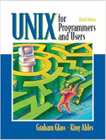
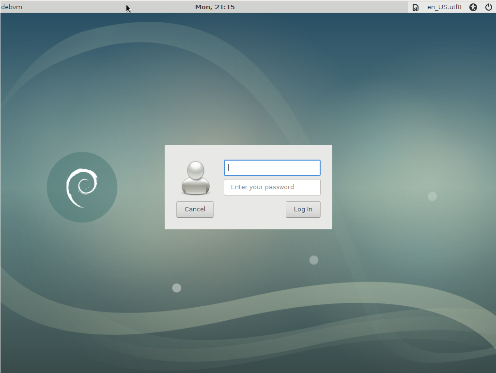
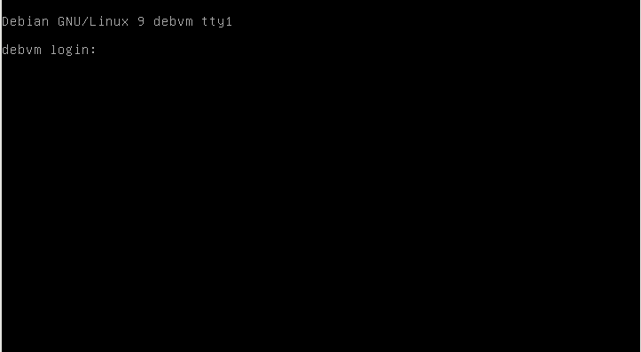

CS 2600 - Unix and Scripting
Table of Contents
- Day 1 - Tue, January 21, 2020
- Day 2 - Thu, January 23, 2020
- Day 3 - Tue, January 28, 2020 Quiz1
- Day 4 - Thu, January 30, 2020
- Day 5 - Tue, February 4, 2020
- Day 6 - Thu, February 6, 2020 Canceled
- Day 7 - Tue, February 11, 2020 Quiz2
- Day 8 - Thu, February 13, 2020
- Day 9 - Tue, February 18, 2020
- Day 10 - Thu, February 20, 2020
- Day 11 - Tue, February 25, 2020 Canceled
- Day 12 - Thu, February 27, 2020 Quiz3
- Day 13 - Tue, March 3, 2020
- Day 14 - Thu, March 5, 2020
- Day 15 - Tue, March 10, 2020 Midterm1
- Day 16 - Thu, March 12, 2020 Midterm2
- Day 17 - Tue, March 17, 2020 Quiz4
- Day 18 - Thu, March 19, 2020 Canceled
- Day 19 - Tue, March 24, 2020
- Day 20 - Thu, March 26, 2020 Quiz5
- Day 21 - Tue, March 31, 2020 Holiday SpringBreak
- Day 22 - Thu, April 2, 2020 SpringBreak
- Day 23 - Tue, April 7, 2020 Quiz6
- Day 24 - Thu, April 9, 2020
- Day 25 - Tue, April 14, 2020
- Day 26 - Thu, April 16, 2020
- Day 27 - Tue, April 21, 2020 Quiz7
- Day 28 - Thu, April 23, 2020
- Day 29 - Tue, April 28, 2020
- Day 30 - Thu, April 30, 2020
- Day 31 - Tue, May 5, 2020 Quiz8
- Day 32 - Thu, May 7, 2020
- Day 33 - Tue, May 12, 2020 Final
Day 1 - Tue, January 21, 2020
CS 2600 Spring 2020 Syllabus Syllabus
Instructor: David A. Gershman, CISSP
| Office: | 8/47 |
| Hours: | TTh 8:30pm - 9:30pm |
| Email: | dagershman@dagertech.net / dagershman@cpp.edu |
| GPG Key: | 0xD0D753BB |
Description:
Fundamentals of the UNIX operating system and scripting. Tools for file management, communication, process control, and program development. Introduction to various UNIX shells and programming (scripting) in the shells.
Prerequisites: C or better in CS 128, CS 141, CS 1280 or CS 1400, or consent of instructor.
Text:
|  | UNIX for Programmers and Users 3ed., Glass, Graham and King Ables; Que, 2003. |
Distribution:
| Quizzes | 30% |
| Midterms | 35% |
| Final | 35% |
Formula: (Qs/Qp) * 0.30 + (Mids/Midp) * 0.35 + (Fins/Finp) * 0.35
where Xs : sum of your points, Xp : sum of possible points
Grading:
| 90 - 100.00 | ….. | A |
| 80 - 89.999 | ….. | B |
| 70 - 79.999 | ….. | C |
| 60 - 69.999 | ….. | D |
| - 59.999 | ….. | F |
( +/- are awarded on upper and lower thirds respectively )
Dates:
| Holiday(s): | Tuesday, March 31, 2020 (Cesar Chavez Day) |
| Midterm | TTh March 10 and 12, 2020 @ 7:00pm - 8:15pm |
| Final: | Tuesday, May 12, 2020 @ 7:00pm - 8:50pm via Finals Schedule found here |
Miscellaneous:
Regular and punctual class attendance is expected.
All assignments are due at their due date and time. Penalties will result for late assignments.
The final exam is comprehensive.
Students are reminded of the university policy with regard to academic integrity. Any assignment, program, or examination that is not the student's own work will receive no credit and may also result in a failing grade in the course, or in university disciplinary action, or both. It can be very helpful to communicate with each other (and with me) about the assigments. However, each student is responsible for understanding each assignment, then completing and handing in their own assignment. Any group activities will be clearly identified as such.
Logistics
What to Call Me?
David, Professor Gershman, Mr. Gershman, or Gershman…whichever you're comfortable with and feel is respectful. (Please refrain from "Dr.", I unfortunately do not have a PhD.)
Laptops
I do encourage students to bring their laptops to class if they have them. However, it is not required and not having one will not "harm" your grade in any way.
Electrical Outlets
The use of laptops is welcomed and encouraged. Feel free to use any electrical outlet except the one on the instructor's station. Please use caution so cords are not tripped on or inadvertently pulled damaging hardware.
Food/Drink
Class time is right near dinner time. You're welcome to bring food and/or drink into class. Just please make sure it is not "noisy" like chips or "crinkly" bags. If you spill or make a mess, please clean up after yourself.
Cell Phones
Common courtesy please. Put your cell phones on vibrate. If you forget, please do so when/if it rings. If you need to take a call, feel free to step outside the class so as to not disturb others. Texting during lecture is fine…but not during quizzes or exams.
DaGerTech.net
I house my own server for my web services, email, etc. Additionally, I have my own Certificate Authority for issuing all my needed SSL/TLS certificates and my entire site requires SSL (http*s*).
What this means is your web browser is going to complain when accessing the Student Status System.
To prevent the warning messages, install my Certificate Authority's certificate into your web browser. Different browsers require different steps.
In class, I'll show how to do it using Firefox. If you need help with Opera, Safari, etc. Let me know and I'll see if I can help.
WARNING: Chrome still ignores the certificate and prevents access to the web site. You will require an alternative browser to access the Student Status System.
Bathroom Visits
Just go quietly (no pun intended). No need to ask…not even during exams.
Needing to Miss a Class
If it's a normal lecture day, do not feel the need to let me know. If you do, I thank you but don't feel it necessary. However, on days with Quizzes or Exams, by all means contact me ahead of time, if possible, so we can make other arrangements.
Student Status System
The Student Status System is an online tool hosted on my own server where students can:
- Monitor their progress in the class
- Obtain these class notes
- Obtain the www.dagertech.net CA certificate (to remove browser warnings)
- Submit assignments as necessary
- Retrieve assignments after grading
Usernames and passwords will be emailed to each student individually.
Note: URLs in emails will contain hxxp/hxxps instead of http/https. This is because CPP's M$ email system thinks they're protecting you.
Course Notes
Class notes are available via the Student Status System as a .zip file. This file has a date as do the HTML "slides" themselves. Periodically, compare the two to ensure you always have the latest copy of the notes.
Course Notes Navigation
The notes utilize some Javascript for presentation-like navigation. The most useful Hot-Keys are:
| Key | Action |
|---|---|
| n | Next slide |
| p | Previous Slide |
| N | Next Day |
| P | Previous Day |
| i | Table of Contents |
| t | Top of Notes |
| e | End of Notes |
| ? | Access help screen |
| m F F F | All notes in single HTML view (good for searching w/C-f) |
ECO Outline
Documented Expected Outcomes
- Learn the philosophy behind the UNIX operating system
- Appreciate the various utilities used for file management, process control, communication and program development
- Master the various UNIX shells and scripting in these shells
- Develop skills to combine various utilities to perform the task at hand
- Learn basic concepts of Perl scripting
Planned Expected Outcomes
- Learn the philosophy behind the UNIX operating system
- Appreciate the various utilities used for file management, process control, communication, program development, and others!.
- Master the
variousBash UNIX shell and scripting inthesethis shell. - Develop skills to combine various utilities to perform the task at hand.
- Learn the basics of Perl scripting
- Survey various UNIX shells and their environments, if time.
ECO Outline Details
Documented
- Introduction to UNIX
- UNIX File hierarchy
- Core utilities for file management and process control
- Jobs, I/O and redirection
- Regular expressions using grep
- Text editing using sed and awk
- Vi and Emacs interactive editors
- UNIX shells – Bourne, Bourne Again, C-shell, Korn Shell
- Programming features of shells
- Shell Scripting
- UNIX programming tools
- Understanding and creating makefiles
- Software distribution in UNIX environment
- Introduction to Perl and its features
- Perl scripting
Adjusted
Not necessarily in order!
- Introduction to UNIX
- Software distribution in UNIX environment
- UNIX File hierarchy
- Core utilities for file management and process control
- Jobs, I/O and redirection
- Regular expressions
- via grep
- via Perl Compatible Regular Expressions (PCRE)
- Text editing
- Vi, Emacs, and Nano
- In-line via
sed,awk,perl, etc.
- Bash Shell Scripting
- Introduction to Perl
- Understanding and creating makefiles, if time
UNIX programming tools
Introduction to Unix
General History - A Synopsis
- Started on a PDP-7 at Bell Labs in '70s, coded in Assembly.
- '73 - rewritten in C making it portable!
- '75 - v6, left Bell labs and later morphed into BSD v1.0
- '80 - M$ introduces Xenix
- '82 - AT&T released System III (first public release outside Bell
Labs); SunOS 1.0 ships
- HP-UX and Ultrix-11 also introduced
- '83 - AT&T released System V - first supported release.
- '84 - Berkley released BSD 4.2
- '88 - Posix.1 published; Open Software Foundation (OSF) and Unix International (UI) formed
- '91 - Solaris 1.0 debuts; Linux development starts
- '94 - Linux 1.0 released
- '95 - Linux is ported to DEC and Sun SPARC (normally SunOS/Solaris)
- '99 - 30th anniversary; Linux 2.2 Kernel released; First LinuxWorld conference
- 2001 - Linux 2.4 kernel; IBM AIX 5L ships
- 2005 - OpenSolaris released
- 2007 - MacOS X certified to Unix 03.; Dell ships Ubuntu systems
- 2010 - Oracle buys Sun Microsystems (…the start of the end)
- 2011 - Linux 3.0 kernel
- 2012 - Linux server revenue exceeds all other Unixes
- 2015 - Linux 4.0 kernel
- 2016 - M$ adds Linux subsystem to Win10 (M$ users are confused; Linux users cry, and someone gets elected. Coincidence??)
- 2017 - Oracle lays off ~2500 Solaris engineers - "killing Solaris"
- 2018 - Currently Linux 4.4 kernel
Linux Distributions
Primary Distros - Starting Points
- Red Hat
- Debian
- "Slackware"
- Gentoo (formerly Enoch)
Derivatives
- Ubuntu (Debian)
- KNoppix (Debian)
- Clonezilla (Debian)
- Fedora (Open Source version of Red Hat)
- CentOS (RedHat)
- YellowDog (RedHat)
- SuSE (Slackware)
- SystemRescueCD (Gentoo)
For an eyesore: Click Here
{kind=link}
Working Environment
To practice/explore what we learn in class, you need a Linux system. The recommended/expected environment is either:
- A native installation (laptop or dual-booted system), or
- A virtual machine
If you're fairly new to Linux/Unix, it is highly recommended to install Oracle's VirtualBox on your system (Windows or Mac), and then install a Linux distribution in a virtual machine (VM).
The Linux distribution I use is Debian.
Can You Show Us How to Install VirtualBox?
For an old video, look here. Specifically, 06-installvbox.mp4.
VirtualBox Tips
- Snapshots are a great way to avoid destroying what you've done
so far.
- Not needed for practice/development work, only OS changes (SW installation, config changes, etc.)
- To close the VM, click the 'X' in the upper-right corner.
- Option 1: Save the Machine State
- Most used since next time, "boot" is fast and puts you right back where you left off
- Option 2: Send the Shutdown Signal
- Used to send a virtual "Ctl-Alt-Del" (but not really the key strokes)
- Option 3: Power Off the Machine
- Think, pulling the power cord or flipping the on/off switch.
- Last resort
- WARNING: VirtualBox remembers the last option you chose. So if you "Powered off the Machine" last time, it will make this the default for the next time. Normally this is NOT what you'll want to do.
- Option 1: Save the Machine State
- Guest Additions : Provides additional functionality like:
- Copy 'n' Paste to/from VM and host
- Automatic resolution adjustment when resizing the VM window (does not work for console screens)
- Shared directories
What Version of Linux Do I Install?
I pretty much leave that up to the student. Here are some Pros/Cons of some distributions (distros), for you to consider:
Debian : Latest version is 10 (Buster). This is what I use and if you want to follow what I do as closely as possible, choose this one. Many other distros are based on Debian, so getting a feel for this one gives you knowledge for several others. For some old videos, look here. Specifically, videos 7-9. They were for Debian 8 (Jessie), but may still be useful if installing 10 (Buster).
WARNING: Running Debian inside a VM should not have any issues. However, since Debian does not support proprietary hardware in its default installation disks, installing on a laptop or desktop system can prove challenging if you don't have drivers already available (i.e. or the experience to know how to move forward without them).
- Fedora : Not sure what the latest version is as I've not followed it. However, Fedora is the open source branch of Red Hat. If you are going to be dealing with Linux in the Government space (Raytheon, Boeing, Northrup Grumann, Military, etc.) this distro would give you a good heads up. Red Hat is the only Linux distro approved for Government systems. However, Red Hat itself is not free, thus Fedora is a close representation.
- Ubuntu : Ubuntu is one of the most common Linux distros for new users. The main issue I have with it is it's become rather M$-ish. They use an "app-store" which includes paid-software and even requires you to opt-out of search terms getting sent to the parent company (Canonical). These properties are what had me transition from XUbuntu to Debian.
- Mint : Never used this one but have heard decent things about it.
- CentOS : This is a branch of Red Hat as well, but geared more for servers than workstations.
What About MacOS???
While MacOS is based on Unix and even has Bash (the Terminal program), several utilities we'll talk about are not available by default. If you feel brave, you can install Homebrew and hope they have the additional tools when we encounter them. Otherwise, a VirtualBox VM is preferred.
What About the Windows Linux Subsystem???
What About VMWare???
Last I heard, CPP offers a free version of VMWare for virtual machines since you are a student. However, it requires registration to obtain a license…you just don't pay for it. VirtualBox requires no such registration…just download and go.
If you truly want to use VMWare, I won't stop you. Just know if something is not working with the VM, I'm not sure I'll be able to help you (though I will still try).
Can You Show Me How to Dual-Boot my Windows 10 System?
No.
Can You Show Me How to Dual-Boot my Mac?
No.
Why Are You Being a Jerk About It???
It's Windows 10 and Mac.
Accessing Linux
Graphical Login
Current Linux distro's provide a GUI, Graphical User Interface, login screen

Figure 1: Sample GUI Login
Console Login
Before GUIs, only text-based screens (consoles) were possible:

Figure 2: Sample Console Login
Constant Console Login
Linux/Unix didn't always have a GUI. In fact, in industry, you often find yourself remotely logging into Linux/Unix systems. When you do, you don't have a GUI.
To get the full experience for this class, challenge yourself to work in a text-only environment; even from boot. (i.e. system starts up into a console-based screen, no GUI)
Different Linux distributions have different methods. For Debian 10:
- Get 'root'
- View the current default runlevel and boot target
- Change the current default boot target
- Verify the current new default
- Reboot
$ su - Password: # systemctl get-default graphical.target # runlevel N 5 # systemctl set-default multi-user.target Removed /etc/systemd/system/default.target Created symlink /etc/systemd/system/default.target -> /lib/systemd/system/multi-user.target # systemctl get-default multi-user.target # reboot
Virtual Consoles
Just because we're in a text screen, doesn't mean we can't have multiple "windows".
Changing Virtual Consoles
Using the hot-key sequence Alt-Fx, where x is from 1 to 6, you can change between 6 different consoles named tty1 through tty6. Each one is like having a separate window to work within.
Getting to GUI
If you've configured the console screen as your default setup but you're really stuck and feel you need the GUI, just type:
$ startx
Day 2 - Thu, January 23, 2020
Accessing Linux
Graphical Login
Current Linux distro's provide a GUI, Graphical User Interface, login screen
Figure 3: Sample GUI Login
Console Login
Before GUIs, only text-based screens (consoles) were possible:
Figure 4: Sample Console Login
Constant Console Login
Linux/Unix didn't always have a GUI. In fact, in industry, you often find yourself remotely logging into Linux/Unix systems. When you do, you don't have a GUI.
To get the full experience for this class, challenge yourself to work in a text-only environment; even from boot. (i.e. system starts up into a console-based screen, no GUI)
Different Linux distributions have different methods. For Debian 10:
- Get 'root'
- View the current default runlevel and boot target
- Change the current default boot target
- Verify the current new default
- Reboot
$ su - Password: # systemctl get-default graphical.target # runlevel N 5 # systemctl set-default multi-user.target Removed /etc/systemd/system/default.target Created symlink /etc/systemd/system/default.target -> /lib/systemd/system/multi-user.target # systemctl get-default multi-user.target # reboot
Virtual Consoles
Just because we're in a text screen, doesn't mean we can't have multiple "windows".
Changing Virtual Consoles
Using the hot-key sequence Alt-Fx, where x is from 1 to 6, you can change between 6 different consoles named tty1 through tty6. Each one is like having a separate window to work within.
Getting to GUI
If you've configured the console screen as your default setup but you're really stuck and feel you need the GUI, just type:
$ startx
Unix File System Architecture
File System Structure
- Hierarchical
- Made up of directories (i.e. "folders")
- Sub-directories
- Top-most directory is /
/
└─ root
├── brcm
└── bcm43xx-0.fw
├── bcm43xx_hdr-0.fw
├── brcmfmac43602-pcie.ap.bin
└── brcmfmac43602-pcie.bin
├── Desktop
├── Documents
├── Downloads
├── Music
├── Pictures
├── Public
├── Templates
└── Videos
- When you perform commands, you are "in" a directory.
- Important when dealing with commands and files
- Your "HOME" directory is usually /home/USERNAME
- Not universal
- CPP "HOME" is /user/USERNAME
External Media
- All devices (HD, CD, DVD, USB, etc) are viewable within existing
directory structure
- via "mount points" (no letter drives!)
- Must be "mounted" to be visible
/ └─ mnt └── cdrom # mount point ├── file1.txt ├── install.sh └── data.dat
Peeking into the Kernel
- In Unix, almost EVERYTHING is treated as a file.
- /proc is a directory structure made up of
file-looking things
- Actually, "hooks" into the running kernel
Prompt Overview
On a console screen, a typical Linux prompt may look like:
bdorf@debvm:~$
This specific prompt provides 4 pieces of information:
- The user you're acting as : bdorf
- The computer's hostname: debvm
- The current directory you're in: ~ (i.e. bdorf's "home" directory)
- And if your a privileged user or not: #
As you perform these tasks:
- change user accounts, and/or
- log on to other machines, and/or
- change directories, and/or
- gain root privileges
The prompt changes:
bdorf@debvm:~$ cd /mnt bdorf@debvm:/mnt$ su - Password: root@debvm:~# cd /mnt root@debvm:/mnt# ssh sam@machine2 Password: sam@machine2:~$ su - Password: root@machine2:~# cd /mnt root@machine2:/mnt#
The prompt can also be customized. This will be described a little later in the course.
Basic Commands (for now)
For now, we need some basic commands to navigate the command line. You'll learn a lot in this class, but for now, these will all you to "get by":
Clearing the Screen
clear
bdorf@debvm:~$ clear
You may also use Control-l (C-l), however this is specific to Bash.
List Files
ls is used to list the files in the current directory:
$ ls file1.txt file2.txt file3.txt other_stuff $
Displaying Text Files
cat
$ ls file1.txt file2.txt file3.txt other_stuff $ cat file1.txt Hello File 1 $
Change Directories
cd is used to change into a sub-directory or move back up a directory (use '..')
$ ls file1.txt subdir $ cd subdir $ ls $ cd .. $ ls file1.txt subdir $
Change to Your Home Directory
cd
bdorf@debvm:/some/directory$ cd bdorf@debvm:~$
Go to the Start of the Command Line
Control-a (C-a) (Specific to Bash)
'_' is the cursor location:
bdorf@debvm:~$ some long command line_ # /C-a/ bdorf@debvm:~$ _some long command line
Go to the End of the Command Line
Control-e (C-e) (Specific to Bash)
'_' is the cursor location:
bdorf@debvm:~$ some long command line_ # /C-a/ bdorf@debvm:~$ _some long command line # /C-e/ bdorf@debvm:~$ some long command line_
Clear the Whole Command Line
Go to the start and then C-k (Specific to Bash)
bdorf@debvm:~$ some long command line_ # /C-a/ bdorf@debvm:~$ _some long command line # /C-k/ bdorf@debvm:~$ _
Repeat a Command
There are many options to repeating a command. For now, just use the cursor UP/DOWN key to cycle through previous commands typed.
bdorf@debvm:~$ cd /mnt bdorf@debvm:/mnt$ touch file bdorf@debvm:/mnt$ ls file bdorf@debvm:/mnt$ _ # /Cursor-UP once/ bdorf@debvm:/mnt$ ls_ # /Cursor-UP again/ bdorf@debvm:/mnt$ touch file_ # Now edit and continue bdorf@debvm:/mnt$ touch file2 bdorf@debvm:/mnt$ _ # /Cursor-UP twice/ bdorf@debvm:/mnt$ ls file file2 bdorf@debvm:/mnt$
Get root Access
For Debian, use su -:
bdorf@debvm:~$ su -
Password: {enter 'root's password}
root@debvm:~# _
Checking For, and Installing System Updates
Quite often there will be "patches" for your Linux OS. These may be security patches or just new versions of installed SW. Using the command apt-get we can install any new packages.
Update the Repo DB
To install patches, first we will want to update/synchronize the sofware database on our system with that of the Linux Distro's SW repository. apt-get with the update command will accomplish this.
Note: This requires 'root' access!!
$ su - Password: # # Notice the prompt change # apt-get update Get:1 http://deb.debian.org/debian buster-updates InRelease [49.3 kB] Hit:2 http://ftp.debian.org/debian stable InRelease Get:3 http://security.debian.org/debian-security buster/updates InRelease [65.4 kB] Get:4 http://security.debian.org/debian-security buster/updates/main Sources [99.9 kB] Get:5 http://security.debian.org/debian-security buster/updates/main amd64 Packages [174 kB] Get:6 http://security.debian.org/debian-security buster/updates/main Translation-en [90.5 kB] Fetched 479 kB in 1s (407 kB/s) Reading package lists... Done #
Once you get your 'root' prompt back, this step is done. However, if you want to now install patches, remain logged in as 'root'.
Install Patches
The next step is to use apt-get with the upgrade command:
# apt-get upgrade Reading package lists... Done Building dependency tree Reading state information... Done Calculating upgrade... Done The following packages will be upgraded: libtiff5 lightning openjdk-11-jre openjdk-11-jre-headless python-apt-common python3-apt thunderbird 7 upgraded, 0 newly installed, 0 to remove and 0 not upgraded. Need to get 80.4 MB of archives. After this operation, 379 kB of additional disk space will be used. Do you want to continue? [Y/n]
Depending on your system, you may have a different list of packages needing updating. If you're OK with the list, hit 'Y' and <ENTER> to continue.
Do you want to continue? [Y/n] Y Get:1 http://security.debian.org/debian-security buster/updates/main amd64 libtiff5 amd64 4.1.0+git191117-2~deb10u1 [271 kB] Get:2 http://security.debian.org/debian-security buster/updates/main amd64 lightning all 1:68.4.1-1~deb10u1 [890 kB] Get:3 http://security.debian.org/debian-security buster/updates/main amd64 thunderbird amd64 1:68.4.1-1~deb10u1 [41.6 MB] Get:4 http://security.debian.org/debian-security buster/updates/main amd64 openjdk-11-jre amd64 11.0.6+10-1~deb10u1 [34.2 kB] Get:5 http://security.debian.org/debian-security buster/updates/main amd64 openjdk-11-jre-headless amd64 11.0.6+10-1~deb10u1 [37.3 MB] Get:6 http://security.debian.org/debian-security buster/updates/main amd64 python-apt-common all 1.8.4.1 [95.7 kB] Get:7 http://security.debian.org/debian-security buster/updates/main amd64 python3-apt amd64 1.8.4.1 [184 kB] Fetched 80.4 MB in 14s (5,906 kB/s) Reading changelogs... Done (Reading database ... 187160 files and directories currently installed.) Preparing to unpack .../0-libtiff5_4.1.0+git191117-2~deb10u1_amd64.deb ... Unpacking libtiff5:amd64 (4.1.0+git191117-2~deb10u1) over (4.0.10-4) ... Preparing to unpack .../1-lightning_1%3a68.4.1-1~deb10u1_all.deb ... Unpacking lightning (1:68.4.1-1~deb10u1) over (1:68.3.0-2~deb10u1) ... Preparing to unpack .../2-thunderbird_1%3a68.4.1-1~deb10u1_amd64.deb ... Unpacking thunderbird (1:68.4.1-1~deb10u1) over (1:68.3.0-2~deb10u1) ... Preparing to unpack .../3-openjdk-11-jre_11.0.6+10-1~deb10u1_amd64.deb ... Unpacking openjdk-11-jre:amd64 (11.0.6+10-1~deb10u1) over (11.0.5+10-1~deb10u1) ... Preparing to unpack .../4-openjdk-11-jre-headless_11.0.6+10-1~deb10u1_amd64.deb ... Unpacking openjdk-11-jre-headless:amd64 (11.0.6+10-1~deb10u1) over (11.0.5+10-1~deb10u1) ... Preparing to unpack .../5-python-apt-common_1.8.4.1_all.deb ... Unpacking python-apt-common (1.8.4.1) over (1.8.4) ... Preparing to unpack .../6-python3-apt_1.8.4.1_amd64.deb ... Unpacking python3-apt (1.8.4.1) over (1.8.4) ... Setting up openjdk-11-jre-headless:amd64 (11.0.6+10-1~deb10u1) ... Installing new version of config file /etc/java-11-openjdk/jfr/default.jfc ... Installing new version of config file /etc/java-11-openjdk/jfr/profile.jfc ... Installing new version of config file /etc/java-11-openjdk/security/java.security ... update-alternatives: using /usr/lib/jvm/java-11-openjdk-amd64/bin/jfr to provide /usr/bin/jfr (jfr) in auto mode Setting up openjdk-11-jre:amd64 (11.0.6+10-1~deb10u1) ... Setting up python-apt-common (1.8.4.1) ... Setting up thunderbird (1:68.4.1-1~deb10u1) ... Skipping profile in /etc/apparmor.d/disable: usr.bin.thunderbird Setting up libtiff5:amd64 (4.1.0+git191117-2~deb10u1) ... Setting up python3-apt (1.8.4.1) ... Setting up lightning (1:68.4.1-1~deb10u1) ... Processing triggers for mime-support (3.62) ... Processing triggers for hicolor-icon-theme (0.17-2) ... Processing triggers for libc-bin (2.28-10) ... Processing triggers for man-db (2.8.5-2) ... Processing triggers for desktop-file-utils (0.23-4) ... #
Depending on the number of packages, this may take some time.
Cleaning Up Stale Files
Finally, an optional last step is to remove files no longer needed. These are not temporary files but rather SW package dependencies which are no longer needed.
To clean these up, use apt-get with the autoremove command.
# apt-get autoremove Reading package lists... Done Building dependency tree Reading state information... Done 0 upgraded, 0 newly installed, 0 to remove and 0 not upgraded. #
In this example, I had no extraneous packages.
When to Update?
The simple answer to this question is everyday. By default, Debian does not automatically check for and install patches. While there are tools which will do this for you, depending on the nature of the Linux system, it may not be feasible.
For example, a server running 24/7 can be configured to automatically check for, download, and install patches. However, a laptop, contantantly being booted and shutdown and irregular times, would make this tedious and often inconvenient.
Install Software
Software on Debian are called packages. To install a new package you need to know its name and do the installation as the 'root' user. What the package name is depends, so as we go along, you'll be told what to install (whether by me or by some online instructions).
We'll be using tmux, a terminal multiplexer, in this class, so let's install that.
To install software from the Linux repository, we use apt-get install followed by the package name.
For tmux, the package name is "tmux":
bdorf@debvm:~$ su -
Password: {enter 'root's password}
root@debvm:~# apt-get install tmux
Reading package lists... Done
Building dependency tree
Reading state information... Done
The following NEW packages will be installed:
tmux
0 upgraded, 1 newly installed, 0 to remove and 0 not upgraded.
Need to get 0 B/265 kB of archives.
After this operation, 635 kB of additional disk space will be used.
Selecting previously unselected package tmux.
(Reading database ... 113615 files and directories currently installed.)
Preparing to unpack .../archives/tmux_2.3-4_amd64.deb ...
Unpacking tmux (2.3-4) ...
Setting up tmux (2.3-4) ...
Processing triggers for man-db (2.7.6.1-2) ...
root@debvm:~# exit
bdorf@debvm:~$ _
Practice: Install the software package called tree.
Exiting Current Shell
To exit the current shell, type exit:
Debian GNU/Linux 9 debvm tty1
debvm login: bdorf
Password:
bdorf@debvm:~$ date
Thu Aug 30 16:22:57 PDT 2018
bdorf@debvm:~$ exit
{screen clears}
Debian GNU/Linux 9 debvm tty1
debvm login: _
Unix File System Architecture
File System Structure
- Hierarchical
- Made up of directories (i.e. "folders")
- Sub-directories
- Top-most directory is /
/
└─ root
├── brcm
└── bcm43xx-0.fw
├── bcm43xx_hdr-0.fw
├── brcmfmac43602-pcie.ap.bin
└── brcmfmac43602-pcie.bin
├── Desktop
├── Documents
├── Downloads
├── Music
├── Pictures
├── Public
├── Templates
└── Videos
- When you perform commands, you are "in" a directory.
- Important when dealing with commands and files
- Your "HOME" directory is usually /home/USERNAME
- Not universal
- CPP "HOME" is /user/USERNAME
External Media
- All devices (HD, CD, DVD, USB, etc) are viewable within existing
directory structure
- via "mount points" (no letter drives!)
- Must be "mounted" to be visible
root@debvm:~# mkdir /mnt/cdrom root@debvm:~# cd /mnt/cdrom root@debvm:/mnt/cdrom# ls root@debvm:/mnt/cdrom# cd root@debvm:~# mount /dev/sr0 /mnt/cdrom # /dev/sr0 is typical CD drive root@debvm:~# cd /mnt/cdrom root@debvm:/mnt/cdrom# ls file1.txt install.sh data.dat root@debvm:/mnt/cdrom# cd / root@debvm:/# tree /mnt /mnt └── cdrom ├── file1.txt ├── install.sh └── data.dat root@debvm:/# _
Note: tree may not be installed. You can install it using the package name tree.
Peeking into the Kernel
- In Unix, almost EVERYTHING is treated as a file.
- /proc is a directory structure made up of
file-looking things
- Actually, "hooks" into the running kernel
For example, what's the model and speed of the CPU?
bdorf@debvm:~$ cat /proc/cpuinfo
{lots of data, depends on CPU}
bdorf@debvm:~$
Or, is the machine currently forwarding IPv4 data?
bdorf@debvm:~$ cat /proc/sys/net/ipv4/ip_forward 0 bdorf@debvm:~$
Nope, guess not. (0==not forwarding)
Terminal Multiplexer - tmux
tmux is a tool for generating several windows and panes for working in a text-only environment - a screen multiplexer.
Installation
Installing software on your Linux VM, for this class, will simply require using the repository. The repository is a large collection of free, open source software already compiled and setup for your Linux installation.
Install tmux
Again, for Debian 10 (requires Internet access):
$ su - Password: # apt-get update # apt-get install tmux # exit
Default Hot-Keys
All commands need to be preceded with the Meta-Key
Meta-Key: Control-b (C-b)
| Key | Action |
|---|---|
| c | New Window |
| , | Rename window (be sure to remove old stuff) |
| " | Split Screen horizontally (top 'n' bottom) |
| % | Split Screen vertically (left 'n' right) |
| t | Show clock in pane |
| : | Issue a command |
| o | Move to other pane (cycles through panes) |
| C-UP/DOWN/LEFT/RIGHT | Resize pane |
| ? | Display Help |
| 1-9 | Change to window 1-9 |
- To close a pane, just exit the shell it's using.
- To exit help, tap ESC.
Config File
To change defaults, created/edit a file called .tmux.conf located in your home directory.
Gershman's Config
set-option -g display-time 1000 set-option -g display-panes-time 1000 set-option -g prefix C-t unbind-key C-b bind-key C-t send-prefix bind-key | split-window -h bind-key - split-window bind-key C-l select-pane -R bind-key C-f select-pane -L bind-key C-p select-pane -U bind-key C-n select-pane -D bind-key r source-file ~/.tmux.conf \; display "Conf Reloaded."
Practice Tmux
- Take a snapshot of your Linux VM. If you're not using a VM, don't worry about it.
- Log in to your box and create 3 windows, two with 2 panes:
- One window with 2 horizontal panes
- One window with 2 vertical panes
- One window with no panes
- Rename Window #2 to win2
- Launch the clock on Window 1, Pane 0 (hint: use 'q' to identify the panes)
- Install the tree software
- In Window 0, get 'root' access, clear the screen, and list a tree of the entire / directory.
Day 3 - Tue, January 28, 2020 Quiz1
Displaying the Date - date
date is used to show the current date and/or time in a variety of formats.
Here is the default with no format specified:
$ date Thu 29 Aug 2019 03:34:59 PM PDT $
Formats
Telling date to display the information using a specific format is simply a matter of using the '+' followed by one or more format symbols. Format symbols are show below and need to be preceded by a percent (%) sign:
For example, show what day today is:
$ date +%A Thursday $
or, show today's date as you may normally write it on a piece of paper:
date +'%B %d, %Y' August 29, 2019 $
Notice:
- You may use more than one formatting symbol
- If you need spaces or other punctuation, enclose the format
string in quotes
- Single quotes are best for now
Formatting Symbols
Formatting symbols can be found by viewing the man page for date:
$ man date
but here are many of the most useful ones:
%% a literal % %a locale's abbreviated weekday name (e.g., Sun) %A locale's full weekday name (e.g., Sunday) %b locale's abbreviated month name (e.g., Jan) %B locale's full month name (e.g., January) %d day of month (e.g., 01) %e day of month, space padded; same as %_d %H hour (00..23) %I hour (01..12) %j day of year (001..366) %k hour, space padded ( 0..23); same as %_H %l hour, space padded ( 1..12); same as %_I %m month (01..12) %M minute (00..59) %n a newline %p locale's equivalent of either AM or PM; blank if not known %P like %p, but lower case %S second (00..60) %t a tab %u day of week (1..7); 1 is Monday %U week number of year, with Sunday as first day of week (00..53) %w day of week (0..6); 0 is Sunday %y last two digits of year (00..99) %Y year %Z alphabetic time zone abbreviation (e.g., EDT)
Example
Write the date format, such that, if it were a name of a file, sorting the file names would result in a chronological list:
$ date +'%Y%m%d-%H%M' 20190829-2044 $
Creating a File - touch
If a file does not exist, touch will create it. If the file does exist, touch actually just updates the time stamp of the file.
Updating the time stamp is not why touch is presented here. It is presented here as a way to create an empty file
$ ls dir1 dir2 file1.txt file2.txt file3.txt $ touch newfile.txt $ ls dir1 dir2 file1.txt file2.txt file3.txt newfile.txt $
You can also create multple files at once:
$ ls dir1 dir2 file1.txt file2.txt file3.txt newfile.txt $ rm file1.txt file2.txt file3.txt $ ls dir1 dir2 newfile.txt $ touch file1.txt file2.txt file3.txt $ ls dir1 dir2 file1.txt file2.txt file3.txt newfile.txt $
Listing files - ls
ls is used to list the files in the current directory:
$ ls file1.txt file2.txt file3.txt other_stuff $
Almost all Unix commands have options or switches…extra paramaters to alter the program's behavior.
Basic Globbing
File Globbing is the term used to describe feeding a pattern of files to a tool like ls. For example, list all files ending in .txt:
$ ls *.txt file1.txt file2.txt file3.txt $
or list files starting with other:
$ ls other* other_stuff $
NOTE: this only works this way iff other_stuff is a file. If other_stuff is a directory, you'll get the contents of any directory whose name starts with other*.
-a
-a : List all files including hidden files:
$ ls -a . .. file1.txt file2.txt file3.txt other_stuff $
In Unix, any file (or directory) which starts with a period (.) is not listed/shown unless -a is provided.
-F
-F adds a character to certain files and directories so you can tell which is which.
$ ls -aF ./ ../ file1.txt@ file2.txt* file3.txt other_stuff/
Notice the extra charactes after some of the entries:
| Char | Meaning |
|---|---|
| / | Entry is a directory |
| * | Entry is executable |
| @ | File is a "symlink" |
The "symlink" will be discussed later in the course.
-l
-l provides a long listing of the contents. It results in a tremendous amount more data:
$ ls -alF total 20 drwx------ 3 bdorf bdorf 4096 Sep 3 21:15 ./ drwxrwxrwt 16 root root 12288 Sep 3 21:15 ../ lrwxrwxrwx 1 bdorf bdorf 9 Sep 3 21:15 file1.txt -> file3.txt -rwx------ 1 bdorf bdorf 0 Sep 3 21:14 file2.txt* -rw------- 1 bdorf bdorf 0 Sep 3 21:14 file3.txt drwx------ 2 bdorf bdorf 4096 Sep 3 21:14 other_stuff/ $
Viewing Files - cat
If the file is a plain, old text file we can display it to the screen using the cat command. The parameter to cat is the name of the file or files to display:
$ ls file1.txt file2.txt file3.txt $ cat file1.txt Hello File #1 $ cat file2.txt This is file #2 $ cat file3.txt Inside file #3 $
We can even provide multiple files on a single command line:
$ cat file1.txt file2.txt file3.txt Hello File #1 This is file #2 Inside file #3 $
-n
When viewing files, sometimes it's useful to have line numbers placed in front. cat can do that for us with the -n switch:
$ cat -n file1.txt
1 Hello File #1
$ cat -n file2.txt
1 This is file #2
$
$ cat -n file1.txt file2.txt file3.txt
1 Hello File #1
2 This is file #2
3 Inside file #3
$
tac
While strange but sometimes useful, is to display the file in reverse order (last line first). Linux provides a command tac for just that purpose:
$ tac file4.txt File #4 Line #3 File #4 Line #2 File #4 Line #1 $
Unfortunately, tac does not have the -n switch. However, we can simulate it…well, you'll have to wait to learn pipes.
Hint:
$ tac file4.txt | cat -n
Redirecting Output
When a program executes, it often displays content to the screen. Often, we'll want to save that content to a file. We can do this by using redirection.
Redirection is merely the act of "redirecting" some stream of data, in most cases, this is standard output or STDOUT. For many programs, the stream of data is the output it displays to the screen.
To redirect output of a program, use a greater than symbol, '>' followed the name of the file you wish to save the data to.
$ ls -F dir1/ dir2/ file1.txt file2.txt* file3.txt $ ls -F > saved_output.txt $ cat saved_output.txt dir1/ dir2/ file1.txt file2.txt* file3.txt $ cat -n saved_output.txt 1 dir1/ 2 dir2/ 3 file1.txt 4 file2.txt* 5 file3.txt $
Notice the output is sent to a file slightly differently. ls is able to determine if the output is the screen and if so, it displays the output one way, versus when the output does not go to the screen. This is not typical of programs.
Redirection can be used for almost anything which prints to the screen:
$ echo -e "Hello\nWorld" Hello World $ echo -e "Hello\nWorld" > saved_output.txt $ cat saved_output.tx Hello World $
Catching Errors
Some output you see on the screen is not sent to standard output, but instead to another stream called standard error, or STDERR.
Issue the following command:
$ ls *.dorf ls: cannot access '*.dorf': No such file or directory $
You see this error on the screen, but try and redirect STDOUT:
$ ls *.dorf > output.txt ls: cannot access '*.dorf': No such file or directory $ cat output.txt $
Notice the error still goes to the screen and since there was not output from ls, output.txt was empty.
To redirect STDERR, put a '2' in front of the '>' with no space:
$ ls *.dorf 2> errors.txt $ cat errors.txt ls: cannot access '*.dorf': No such file or directory $
Capture BOTH STDOUT and STDERR
To capture both STDOUT and STDERR to files, just put them both on the command line, either one first:
$ ls *.dorf > output.txt 2> errors.txt $ cat errors.txt ls: cannot access '*.dorf': No such file or directory $ cat output.txt $
Quiz Quiz
- Clear off desks
- Put all answers on quiz sheet
- Put Name or Bronconame in upper-right corner, 1/2" from top and right edges
- No calculators
- When done, be sure of #3!!
- Turn in at front of class, face down.
- You're free to leave. Have a good evening!
Day 4 - Thu, January 30, 2020
Terminal Multiplexer - tmux
tmux is a tool for generating several windows and panes for working in a text-only environment - a screen multiplexer.
Installation
Installing software on your Linux VM, for this class, will simply require using the repository. The repository is a large collection of free, open source software already compiled and setup for your Linux installation.
Install tmux
Again, for Debian 10 (requires Internet access):
$ su - Password: # apt-get update # apt-get install tmux # exit
Default Hot-Keys
All commands need to be preceded with the Meta-Key
Meta-Key: Control-b (C-b)
| Key | Action |
|---|---|
| c | New Window |
| , | Rename window (be sure to remove old stuff) |
| " | Split Screen horizontally (top 'n' bottom) |
| % | Split Screen vertically (left 'n' right) |
| t | Show clock in pane |
| : | Issue a command |
| o | Move to other pane (cycles through panes) |
| C-UP/DOWN/LEFT/RIGHT | Resize pane |
| ? | Display Help |
| 1-9 | Change to window 1-9 |
- To close a pane, just exit the shell it's using.
- To exit help, tap ESC.
Config File
To change defaults, created/edit a file called .tmux.conf located in your home directory.
Gershman's Config
set-option -g display-time 1000 set-option -g display-panes-time 1000 set-option -g prefix C-t unbind-key C-b bind-key C-t send-prefix bind-key | split-window -h bind-key - split-window bind-key C-l select-pane -R bind-key C-f select-pane -L bind-key C-p select-pane -U bind-key C-n select-pane -D bind-key r source-file ~/.tmux.conf \; display "Conf Reloaded."
Practice Tmux
- Take a snapshot of your Linux VM. If you're not using a VM, don't worry about it.
- Log in to your box and create 3 windows, two with 2 panes:
- One window with 2 horizontal panes
- One window with 2 vertical panes
- One window with no panes
- Rename Window #2 to win2
- Launch the clock on Window 1, Pane 0 (hint: use 'q' to identify the panes)
- Install the tree software
- In Window 0, get 'root' access, clear the screen, and list a tree of the entire / directory.
Print to the Screen - echo
Often, in our scripts, we'll want to print messages to the user. Just like some form of 'print' statement in other languages, Bash uses the echo command.
echo takes one or more strings to display to the user:
$ echo Hello World Hello World $ echo Hello World Hello World $
As you can see in the example above, echo took 'Hello' and 'World' as two separate strings, not 1 with several spaces.
To take something entirely as a string, surround it with double quotes:
$ echo Hello World Hello World $ echo "Hello World" Hello World $
Notice, echo displays what we want and then puts the cursor to the beginning of the next line…where our prompt continues.
Do Not Print \n - -n
To suppress the printing of the newline character, use the -n switch:
$ echo "Hello World" Hello World $ echo -n "Hello World" Hello World$
As you can see, our prompt is now immediately after echo's output.
Interpret Escapes - -e
Just as we may want to suppress newline characters, sometimes we'll want to add them. As in other languages, we can use the \n characters in our string.
However:
$ echo "Hello World" Hello World $ echo "Hello\nWorld" Hello\nWorld $
echo does not interpret the \n by default. We must tell echo to interpret escaped characters via -e:
$ echo "Hello\nWorld" Hello\nWorld $ echo -e "Hello\nWorld" Hello World $
And yes, you can combine them:
$ echo "Hello World" Hello World" $ echo -ne "Hello\nWorld" Hello World$
Thus, you can put yourself in total control:
$ echo "Hello World" Hello World $ echo -e "Hello\nWorld" Hello World $ echo -ne "Hello\nWorld\n" Hello World $
Print Working Directory - pwd
As you navigate around the Unix file system, your prompt may or may not tell you where within the tree you are.
pwd can tell you the full path of where you are located:
$ pwd /home/bdorf $
Text Editor - vi
vi is a text editor found in all versions of Unix. vi works in one of two modes: command mode and entry mode. In command mode, the user provides hot-keys to execute actions. In entry mode, the user is entering and editing text.
To use vi, simply type vi, optionally with a name of a file to edit:
$ vi myscript.bash
{edit the file}
$
Hot Keys
The following hot-keys are the only ones I'm going to require you to know.
Often, in order to enter a command while in command-mode, you'll need to type a colon ':'. These are shown below:
| Hot-Key | Description |
|---|---|
| :w | Write the file out |
| :q | Quit vi |
| gg | Goto start of file |
| GG | Goto end of file |
| $ | Goto end of line |
| ^ | Goto start of line |
| i | Enter entry-mode at cursor |
| a | Enter entry-mode after cursor |
| ESC | Exit entry-mode and enter command-mode |
| k | Move up one line |
| j | Move down one line |
| h | Move left one char |
| l | Move right one char |
Text Editor - emacs
emacs is a text editor not installed by default. To install it, install the "emacs24" package on Debian. emacs relies very heavily on the Control and "Meta" key. Sometimes the "Meta" key is just the ESC key and others, ALT or COMMAND (on Mac) can be used. In notations/descriptions, manuals, etc. for emacs, the Control key is usually designated with just a 'C' and the Meta key with 'M'. Example: C-xC-s means press Control-x, release, then press Control-s. Same for 'M and the Meta key (ESC/Alt/Command..as the case may be).
To use emacs, simply type emacs, optionally followed by a name of a file to edit:
$ emacs myscript.bash
{edit the file}
$
Hot Keys
The following hot-keys are the only ones I'm going to require you to know.
| Hot-Key | Description |
|---|---|
| C-xC-s | Save the file |
| C-xC-c | Quit emacs |
| M-< | Goto start of file |
| M-> | Goto end of file |
| C-e | Goto end of line |
| C-a | Goto start of line |
| C-p | Move up one line |
| C-n | Move down one line |
| C-f | Move right one char |
| C-b | Move left one char |
Text Editor - nano
nano is a text editor, usually installed by default, in Linux. It has been gaining popularity due to its ease of use. However, once uses want more power, flexibility, and function, they tend to move to emacs, vi, or a GUI-based editor. Like emacs, nano uses the Control and Meta keys quite a bit. Sometimes the "Meta" key is just the ESC key and others, ALT or COMMAND (on Mac) can be used. However, nano provides the hot-key bindings in a menu-like view at the bottom of the screen.
To use nano, simply type nano, optionally with a name of a file to edit:
$ nano myscript.bash
{edit the file}
$
Hot Keys
The following hot-keys are the only ones I'm going to require you to know.
| Hot-Key | Description |
|---|---|
| C-o | Write out the file |
| C-x | Quit nano |
| M-\ | Goto start of file |
| M-/ | Goto end of file |
| C-e | Goto end of line |
| C-a | Goto start of line |
| C-p | Move up one line |
| C-n | Move down one line |
| C-f | Move right one char |
| C-b | Move left one char |
Viewing files - more
Sometimes files have more content than what can fit on a screen. So, we can view them a "page" at a time using a pager. more is a pager which displays a file one screen full at a time.
Use return to advance one line, space to advance a screenful, and 'q' to quit.
$ more /usr/share/dict/words
Viewing files - less
Another pager is called less. A common phrase is "less is more", meaning less does what more does. However, less is more functional.
For example, one drawback to more is while we can advance a screenful, we can't go backwards (at least not one line).
less is used the same way as more.
Use return or cursor-down to advance one line, cursor-down to move back one line, space or page-down to advance a screenful, b or page-up to go back a screenful, and 'q' to quit.
$ less /usr/share/dict/words
Searching
One of the most powerful features of less is the ability to search for a substring (actually, it's a Regular Expression) in the file.
Use '/' to enter the substring to search for.
For example, we'll less the list of words, hit '/', and search for 'lizard' (type "lizard" followed by ENTER).
$ less /usr/share/dict/words
/lizard{ENTER}
Then you can use 'n' to cycle through all the finds.
See man less for all details. (Which, by they way, uses less for its pager!)
A Simple Script
Now that you know how to:
- Create file
- Print to the screen
- Use redirection to save output/errors
- Display a date/time stamp
Write a script to print a header of some sort, listing all files in the current directory, then list all files with extension .dorf, and be sure to include the date you displayed the report. Use the date format matching "August 29, 2019 @ 04:16pm".
When you run the script, run it without capturing any output, then capture STDOUT, STDERR, then both.
HINT: to run a script you can use the following format:
$ bash myscript.bash or $ bash myscript.bash > output.txt 2> errors.txt
A More Convenient Way
Bash, and most shells, provide a way for us to run scripts without having to feed them manually to the shell executable.
To do this, put the following as the first line in your .bash file:
#!/bin/bash
Then, set the execute permission on the script (we'll cover file permissions more later in the course):
$ chmod u+x myscript.bash $
Now, you can run the script with the following command line:
$ ./myscript.bash My list of files: file1.txt file2.txt My .dorf files: ls: cannot access '*.dorf': No such file or directory $
Practice 1
Description
Obtain a few tools, execute a few commands, get a collection of files, and then write a script.
Details
Step 1 - Install zip and unzip
unzip may not be needed. On Debian, the packages are called zip and unzip.
Step 2 - Obtain data for this practice
We have not gone over these commands, but I think you'll get the idea of what they do.
WARNING: Your Linux resource will need Internet access. If you don't have it, let me know and we'll find another way to do the 3rd command:
$ mkdir practice1
$ cd practice1
# Download {{{fname(practice1_data.zip)}}} from SSS (same place where you get the notes).
$ unzip practice1_data.zip
$
Step 3 - Write some Scripts
Write 3 scripts which list all files ending in a particular extension, store the result in a file, and capture any errors in a second file. Each script should do this for .txt, .mp4, and .jpg extensions. You should have 6 resulting files.
Be sure to include a timestamp in the listing files, as a header, which looks like this:
Thursday August 29, 2019 @ 04:05pm PST
You may name the output files as you wish.
Name the script files:
- listtxt.bash
- listmp4.bash
- listjpg.bash
Lastly, zip up all your result and script files into a single .zip called practice1.zip.
Write-Up
None.
Input
Your script will not take any input on the command line.
Output
The output should be 3 files each showing the contents of any .txt, .mp4, or .jpg files. Additionally, you should have 3 files containing any errors from executing each of the scripts. (Not all will have errors.)
How to Zip
On Unix, to create a .zip file with other files, use the following syntax:
$ zip destination.zip file_to_add file_to_add ... file_to_add
To then check the contents, you can use the -t switch:
$ unzip -t destination.zip
Archive: destination.zip
testing: file_you_added.txt OK
testing: file_you_added.txt OK
...
No errors detected in compressed data of destination.zip.
$
Day 5 - Tue, February 4, 2020
Practice 1 - Solutions
Description
Obtain a few tools, execute a few commands, get a collection of files, and then write a script.
Details
Step 1 - Install zip and unzip
unzip may not be needed. On Debian, the packages are called zip and unzip.
Step 2 - Obtain data for this practice
We have not gone over these commands, but I think you'll get the idea of what they do.
WARNING: Your Linux resource will need Internet access. If you don't have it, let me know and we'll find another way to do the 3rd command:
$ mkdir practice1
$ cd practice1
# Download {{{fname(practice1_data.zip)}}} from SSS (same place where you get the notes).
$ unzip practice1_data.zip
$
Step 3 - Write some Scripts
Write 3 scripts which list all files ending in a particular extension, store the result in a file, and capture any errors in a second file. Each script should do this for .txt, .mp4, and .jpg extensions. You should have 6 resulting files.
Be sure to include a timestamp in the listing files, as a header, which looks like this:
Thursday August 29, 2019 @ 04:05pm PST
You may name the output files as you wish.
Name the script files:
- listtxt.bash
- listmp4.bash
- listjpg.bash
Lastly, zip up all your result and script files into a single .zip called practice1.zip.
Output
The output should be 3 files each showing the contents of any .txt, .mp4, or .jpg files. Additionally, you should have 3 files containing any errors from executing each of the scripts. (Not all will have errors.)
Solution #1 - listtxt.bash
Script:
date +'%A %B %d, %Y @ %I:%M%P %Z'
ls -alF *.txt
Execution:
$ bash listtxt.bash > txt.output 2> txt.error $
Solution #2 - listmp4.bash
Script:
date +'%A %B %d, %Y @ %I:%M%P %Z'
ls -alF *.mp4
Execution:
$ bash listmp4.bash > mp4.output 2> mp4.error $
Solution #3 - listjpg.bash
Script:
date +'%A %B %d, %Y @ %I:%M%P %Z'
ls -alF *.jpg
Execution:
$ bash listjpg.bash > jpg.output 2> jpg.error $
Zip Up Everything
Execution:
$ zip all_files.zip txt.output txt.error mp4.output mp4.error jpg.output jpg.error $
Or, since I chose the file names wisely:
$ zip all_files.zip *.output *.error $
Directory Navigation - cd
cd is used to change directory.
When you log in to a Unix system, by default, you're put into your home directory. We've said this is symbolically denoted by ~. On most Linux systems, it is /home/USERNAME.
In order to move around the Unix hierarchical file system, we use the cd command and give it the new location we'd like to reside in:
$ pwd /home/bdorf $ ls -F other_stuff/ $ cd other_stuff $ pwd /home/bdorf/other_stuff
Paths
You can give cd a path to the target directory so you don't have to move in single-directory increments:
$ pwd /home/bdorf/other_stuff $ cd /home/bdorf/cs2600/hw1 $ pwd /home/bdorf/cs2600/hw1 $
Absolute Paths
An absolute path is a path which starts at the root directory.
For example, /home/bdorf/cs2600/hw1 is an absolute path since the first component is /…the root of the Unix file system.
Another example might be /proc/sys/net/ipv4.
cd can take absolute paths as its parameter.
Relative Paths
A relative path is a path which starts at the current location; the first component is a directory name, not the root directory.
For example, cs2600/hw1 is a relative path:
$ cd $ pwd /home/bdorf $ cd cs2600/hw1 $ pwd /home/bdorf/cs2600/hw1 $
Notice we passed cd a relative path, but pwd returns an absolute path.
..
Sometimes we want to provide a relative path, but still be able to move UP the directory heirarchy. To do so, we can use .. to mean "back up one level of the hierarchy".
So, one level up from /home/bdorf is /home. Thus /home/bdorf/.. is the same as /home:
$ pwd /home/bdorf/cs2600/hw1 $ cd ../../cs3800/hw2 $ pwd /home/bdorf/cs3800/hw2 $
Notice we can use .. more than once (separated by the path delimiter), to denote backing up more than one level. You may use as may as you need.
Here is an actual example from my own system:
$ pwd
/home/bdorf/data/instruction/cal_poly_pomona/CS_2600/2018_fall/students
$ ../../../../bin/create_student_directories.pl
{command executes the 'create_student_directories.pl' script
$
Moving files - mv
Rather than copying, often we'll want to move files from one location to another. To do so, we use the mv command. mv takes at least two parameters, the source file and the destination file:
$ ls -F files1.txt file2.txt other_stuff/ $ mv file1.txt other_stuff/file1.txt $ ls -F file2.txt other_stuff/ $ cd other_stuff $ ls file1.txt $
Keep the File Name
If the destination file does not exist and we want to keep the same name as the source file, we do not need to include the destination file name in the command, just the destination directory:
$ ls -F files1.txt file2.txt other_stuff/ $ mv file1.txt other_stuff $ ls -F file2.txt other_stuff/ $ cd other_stuff $ ls file1.txt $
The '/' after other_stuff is optional.
Renaming Files
In Unix, renaming files is the same as moving them. Just don't include any directories:
$ ls -F files1.txt file2.txt other_stuff/ $ mv file1.txt fileX.txt $ ls -F filesX.txt file2.txt other_stuff/ $
Copying files - cp
To copy a file from one location to another, we use the cp command. cp takes at least two parameters, the source file and the destination file:
$ ls -F files1.txt file2.txt other_stuff/ $ cp file1.txt other_stuff/file1.txt $ cd other_stuff $ ls file1.txt $
Keep the File Name
If the destination file does not exist and we want to keep the same name as the source file, we do not need to include the destination file name in the command, just the destination directory:
$ ls -F files1.txt file2.txt other_stuff/ $ cp file1.txt other_stuff $ cd other_stuff $ ls file1.txt $
The '/' after other_stuff is optional.
Deleting files - rm
To delete a file, we use rm
$ ls file1.txt file2.txt file3.txt $ rm file1.txt $ ls file2.txt file3.txt $
-i
Sometimes, we want to get user verification. To do so, use the -i switch:
$ ls file1.txt file2.txt file3.txt $ rm -i file1.txt rm: remove regular file ‘file1.txt’? n $ ls file1.txt file2.txt file3.txt $ rm -i file1.txt rm: remove regular file ‘file1.txt’? y $ ls file2.txt file3.txt
Deleting Multiple Files
Specify more than one file and rm will remove all of them:
$ ls file2.txt file3.txt $ rm file2.txt file3.txt $ ls $
BE CAREFUL!!!!!!
While globbing is allowed with many of these commands (ls, cp, mv, etc.), using wildcards with rm can be especially dangerous!
$ cd /home/bdorf/hw1 $ rm * $
'bdorf' just deleted all of their homework 1 files!!
Make a Directory - mkdir
To make a directory, use mkdir:
$ ls $ mkdir data $ ls -F data/ $
You can also create a full sequence of directories, aka. a path, by adding the -p switch:
$ ls
$ mkdir data
$ ls -F
data/
$ mkdir -p some/other/path
$ ls -F
data/ some/
$ tree some
some
└── other
└── path
$ ls -RF some
some:
other/
some/other:
path/
some/other/path:
$
Deleting a Directory
To delete a directory, we use either the rmdir command or the rm command, as with files.
Use rmdir when the directory is empty. If the directory is not empty, you can use rm with the -r switch to delete recursively. Be careful using rm -r as you may delete content you didn't mean to.
$ tree . . ├── dir1 ├── dir2 │ └── file2.txt ├── file1.txt ├── file2.txt └── file3.txt 2 directories, 4 files $ rm dir2 # 'rm' can not be used to delete directories w/o -r rm: cannot remove ‘dir2’: Is a directory $ rmdir dir2 # 'rmdir' requires directories to be empty rmdir: failed to remove ‘dir2’: Directory not empty $ rmdir dir1 # 'dir1' is empty, so 'rmdir' works $ ls dir2 file1.txt file2.txt file3.txt $ rm -r dir2 # Use -r to remove a directory tree, empty or not $ ls file1.txt file2.txt file3.txt $
Moving a directory
Moving a directory is the same as moving a file (and with renaming), just use the mv command. No special switches are required.
$ ls -F dir1/ dir2/ file1.txt file2.txt file3.txt $ mv dir2 other_stuff $ ls -F dir1/ file1.txt file2.txt file3.txt other_stuff/ $ mv other_stuff dir1 $ ls -F dir1/ file1.txt file2.txt file3.txt $ tree . . ├── dir1 │ └── other_stuff ├── file1.txt ├── file2.txt └── file3.txt 2 directories, 3 files $
Copying Directories
Copying directories uses the cp command like files, but with the -r switch. -r means "recursive".
$ ls -F dir1/ file1.txt file2.txt file3.txt $ cp dir1 dir2 # 'cp' will not copy directories w/o '-r' cp: omitting directory ‘dir1’ $ cp -r dir1 dir2 $ ls -F dir1/ dir2/ file1.txt file2.txt file3.txt $ tree . . ├── dir1 │ └── other_stuff ├── dir2 │ └── other_stuff ├── file1.txt ├── file2.txt └── file3.txt 4 directories, 3 files $
Practice
Write a script to generate the following tree (and run it to actually create the tree):
$ tree .
.
├── dir1
│ └── subdir1
│ ├── stuff2
│ ├── stuff3
│ └── stuff4
├── dir2
│ └── subdir1
│ ├── stuff2
│ │ └── file2.txt
│ ├── stuff3
│ └── stuff4
└── dir3
└── subdir1
├── stuff2
├── stuff3
│ └── file3.txt
└── stuff4
15 directories, 2 files
$
Then:
- Copy file2.txt into dir1's stuff4 folder and call it file4.txt
- Move file3.txt into dir3's stuff4 directory.
- Remove dir2's subdir1 directory.
Practice
On most Linux systems there is a "Dictionary File", a file with a long list of words, located in /usr/share/dict/words.
What word is on the 64738th line of the dictionary file used in the less example?
Day 6 - Thu, February 6, 2020 Canceled
Class Canceled
Day 7 - Tue, February 11, 2020 Quiz2
Quiz Quiz
- Clear off desks
- Put all answers on quiz sheet
- Put Name or Bronconame in upper-right corner, 1/2" from top and right edges
- No calculators
- When done, be sure of #3!!
- Turn in at front of class, face down.
- You're free to leave. Have a good evening!
Environment Variables
Environment Variables are variables within the Bash shell which can provide useful information.
These variables can be created, set, and maintained by Bash, and/or others by us.
Environment variables may be upper or lower case (or mixed) but must start with a letter and not contain spaces…the common rules to any identifier you're used to.
Setting an Environment Variable
To set a variable, just use the '=' with the value and no spaces:
$ x=5 $ NAME="bob dorf"
Accessing an Environment Variable's Value
To access the variable, use its identifier preceded with a '$':
$ echo $x 5 $ echo "X is $x" X is 5 $ $ echo "Your name is $NAME" Your name is Bob Dorf $
Notice variables are interpolated when included in double quotes ("). However, if inside single quotes ('), the variables will not be interpolated.
Below are Environment Variables created, set and maintained by Bash for our use.
PATH
PATH is a variable which holds the list of directories (colon ':' delimited) Bash will search when trying to locate an executable command.
$ echo $PATH /usr/local/bin:/usr/bin:/bin:/usr/local/games:/usr/games $
(The actual list of directories may vary on your system.)
So if I type the command dothis:
$ dothis
Bash will look in these directories, in order, and use the first occurance of dothis it finds:
- /usr/local/bin
- /usr/bin
- /usr/local/games
- /usr/games
SHELL
The SHELL variable holds the user's currently set/used shell:
$ echo $SHELL /bin/bash $
USER
USER returns the username of the currently logged in user. This is useful when creating scripts which may be used by several users.
$ echo $USER bdorf $
HOME
This variable simply holds the directory which is the currently logged in user's home directory (remember, commonly in /home/USERNAME).
$ echo $USER /home/bdorf $
HOSTNAME
Returns the hostname of the current system.
HOSTTYPE, MACHTYPE, OSTYPE
Returns the architecure of the current host.
$ echo $HOSTTYPE x86_64 $ echo $MACHTYPE x86_64-pc-linux-gnu $ echo $OSTYPE linux-gnu $
LINENO
Contains the line number within a script where the variable appears:
#!/bin/bash echo "Line $LINENO" echo "Line $LINENO" echo "Line $LINENO"
$ ./sample.bash Line 3 Line 4 Line 5 $
OLDPWD
Holds the previous directory you were in. Synonymous to cd -.
SECONDS
Holds the number of seconds the script has been running.
#!/bin/bash echo $SECONDS sleep 5 echo $SECONDS
$ ./sample.bash 0 5 $
RANDOM
When accessed, it will return a random number between 0 and 32767.
$ echo $RANDOM 28101 $ echo $RANDOM 21519 $ echo $RANDOM 19458
This is useful when needing a random number. For example, to get a random number between 1 and 10:
$ echo $(( ($RANDOM % 10) + 1 )) 8 $
Variables WE Can Set and Maintain
EDITOR
Some commands launch your favorite editor. The editor which is launched is typically set by this variable.
HISTFILE
Specifies the file which holds your command history. Default is ~/.bash_history.
HISTSIZE
Specifies the number of commands to remember in RAM. These are normally written to the HISTFILE on exit.
HISTFILESIZE
Specifies the number of commands (lines) to store in the HISTFILE.
PS1
PS1 is a very special environment variable. It hold the characters and character codes which make up your Bash shell command prompt:
Next command? echo $PS1 Next command? Next command?
We can change it by assigning to PS1 what we want:
$ export PS1='> ' > > echo $PS1 > >
Bash Prompt
In the last section we talked about PS1. Now, let's customize our prompt even more.
We said PS1 can hold characters or character codes. In the previous section we only saw characters.
The character codes Bash can interpret within PS1 are several. Here are the more common ones:
| Code | Meaning |
|---|---|
| \h | Insert the system's hostname |
| \u | Insert the current username |
| \w | Insert the current working directory |
| \$ | Insert the proper prompt: $ for normal users, # for root |
| \n | Insert a newline |
| \l | Insert the current TTY the user is utilizing |
See man bash withing the PROMPTING section for more.
Example
Create a prompt which includes the current username, hostname, working directory, prompt and TTY. Keep it all on the same line:
$ export PS1='\u@\h(\l):\w\$ ' bdorf@linuxbox(3):/tmp$
- Username is bdorf
- Hostname is linuxbox
- TTY is 3
- Working directory is /tmp
- Prompt is $
Persistent Prompt
To keep your custom prompt persistent across logins and reboots, include the line to set it in the startup files, namely the .profile file.
Aliases
Aliases are used to take commonly used but lengthy commands and assign them to an abbreviation. Once done, we can place them in our startup files so they are available all the time.
Syntax
The syntax of creating an alias is:
alias /aliasname/={command}
If {command} contains spaces, surround it with quotes. Remember double and single quotes will behave differently depending on what you assign.
For example, perhaps we commonly change directories to our web site. We can create an alias for this:
$ alias goweb='cd /home/bdorf/public_html' $ pwd /tmp $ goweb $ pwd /home/bdorf/public_html $
Or…
$ alias gohome="cd /home/$USER" $ gohome # same as 'cd' now
NOTE: Variables are interpreted at the time of assignment, not execution.
Parameters
Aliases do not support parameters. However, you can place items after them:
$ alias efile='emacs -nw'
$ efile index.html
{emacs launches w/o gui (-nw) automatically loading 'index.html'}
This is more useful for complex commands. For example, a command I use to reduce a PDF file size is:
$ gs -dNOPAUSE -dBATCH -sDEVICE=pdfwrite -dCompatibilityLevel=1.4 -dPDFSETTINGS=/ebook -sOutputFile=output.pdf input.pdf
I can alias most of it:
$ alias shrink='gs -dNOPAUSE -dBATCH -sDEVICE=pdfwrite -dCompatibilityLevel=1.4 -dPDFSETTINGS=/ebook -sOutputFile=output.pdf'
Then, I can just type:
$ shrink myfile.pdf
And my alias will result in a file called output.pdf of smaller size!
Persistence
For aliases to be persistent across logins and reboots, place their assigments into your startup files. For Bash, it is most appropriately the ~/.bash_aliases file.
Startup Files
When you log in to your system, or launch another bash terminal, there are certain files which automatically get processed (executed). These are called "Startup Files".
~/.profile
The ~/.profile startup file is where you can place commands and other items to be executed or set (environment variables) when you first log in to your system. ~/.profile is only read and processed AT FIRST LOGIN.
~/.bashrc
The ~/.bashrc startup file is similar to ~/.profile but will be processed/executed every time you start a bash shell.
~/.bash_aliases
Ironically, the ~/.bash_aliases file is not read on login. Instead, you should read it via ~/.profile or ~/.bashrc.
For example, inside the ~/.bashrc:
if [[ -r ~/.bash_aliases ]]; then . ~/.bash_aliases fi
We haven't talked about 'if', '[[', or '.', but you get the idea.
Example
Let's add a couple of commands to these startup files:
$ echo "echo 'Hello .profile'" >> ~/.profile $ echo "echo 'Hello .bashrc'" >> ~/.bashrc $
Now, log out and log back in to see the result:
debian login: bdorf Password: Hello .profile Hello .bashrc bdorf@linuxbox:~$
Now start another bash shell:
bdorf@linuxbox:~$ bash Hello .bashrc bdorf@linuxbox:~$
You may see the output lines in reverse order. This is because often the ~/.bashrc file may call the ~/.profile file, or vice versa.
Often the order of the files being read can be altered by the Unix distribution.
Day 8 - Thu, February 13, 2020
Command Substitution
Now that we have variables, let's assign more than just basic values.
With command substitution, we can execute a command and have the results assigned to a variable. This provides a lot of utility when dealing with scripts. Especially scripts which are meant to work with hundreds of files or megabytes of data.
Method 1 : Backticks - ``
The first method is a general method which works in many/most shells. Simply surround your command with backticks:
$ today=`date` $ echo "Today is $today" Today is Thu 12 Sep 2019 01:17:01 PM PDT $
Method 2 : POSIX Standard - $( )
The new POSIX standard is to use parens prefixed with a dollar sign:
$ today=$(date) $ echo "Today is $today" Today is Thu 12 Sep 2019 01:17:01 PM PDT $
Example
Write a script, a new ls, to display some boilerplate before the list of files:
#!/bin/bash echo "Date : $(date)" echo "Directory : $(pwd)" echo "" ls -alF
Output:
$ ./ls2 Date : Thu 12 Sep 2019 01:21:36 PM PDT Directory : /home/gershman/workspace/2600 total 32 drwx------ 2 gershman gershman 4096 Sep 12 13:21 ./ drwx------ 4 gershman gershman 4096 Sep 5 11:15 ../ -rw------- 1 gershman gershman 6 Sep 12 13:21 file1.txt -rw------- 1 gershman gershman 6 Sep 12 13:21 file2.txt -rw------- 1 gershman gershman 5 Sep 12 13:21 file3.txt -rw------- 1 gershman gershman 6 Sep 12 13:21 file4.txt -rw------- 1 gershman gershman 5 Sep 12 13:21 file5.txt -rwx------ 1 gershman gershman 105 Sep 12 13:21 ls2* $
Basic Math in Bash
Before we continue, we're going to need to do some math in our Bash script. However, it is not as straightforward as in other languages since Bash will want to parse the expression as a command input.
The short version, perform the math expression inside parens, (), and then put the parenthetical expression inside $():
#!/bin/bash x=5 x=$(($x+1)) # x is not 6 echo $x
Be sure not to have spaces in between the parens. You can around the expression:
x=$(( $x+1 )) # Ok x=$( ($x+1) ) # NOT Ok
Command Combination
Often, we'll want to combine commands on the same line. There are primarily three different ways to do this:
- ; : Perform the next command, period.
- && : Perform the next command only if the first succeeds.
- || : Perform the next command only if the first failed.
;
A semicolon simply separates multiple commands…nothing more.
$ echo "Hello" ; echo "World" Hello World $ eco "Hello" ; echo "World" -bash: eco: command not found World $ echo "Hello" ; eco "World" Hello -bash: eco: command not found $
Notice even if the first command results in an error, the second commandn will still execute.
&&
A double-ampersand will perform both commands only if the first succeeds. If the first fails, the second will NOT be performed. This results in "short-circuiting".
$ echo "Hello" && echo "World" Hello World $ eco "Hello" && echo "World" -bash: eco: command not found $ echo "Hello" && eco "World" Hello -bash: eco: command not found $
Notice in the second version, the first command failed so the second command did not even execute.
Also notice, when the first succeeded and the second failed, we still got some output from the first command!
||
A double-vertical bar will perform both commands only if the first fails. If the first fails, the second WILL be performed. This also results in "short-circuiting".
$ echo "Hello" || echo "World" Hello $ eco "Hello" || echo "World" -bash: eco: command not found World $ echo "Hello" || eco "World" Hello $
Notice the first execution did not even echo "World" since the first echo succeeded.
In the second version, the first command failed so the second was executed.
In the third version, since the first succeeded, the error in the second command was never encountered!
Pipes - |
The vertical bar, or pipe, is how shells implement a basic Unix Philosophy:
Use the output of one program as the input to another.
Consider this simple example:
$ echo "Hello World" | cat -n
1 Hello World
$
Or perhaps do the same with a directory listing:
$ ls -alF | cat -n
1 total 32
2 drwx------ 2 gershman gershman 4096 Sep 12 13:21 ./
3 drwx------ 4 gershman gershman 4096 Sep 5 11:15 ../
4 -rw------- 1 gershman gershman 6 Sep 12 13:21 file1.txt
5 -rw------- 1 gershman gershman 6 Sep 12 13:21 file2.txt
6 -rw------- 1 gershman gershman 5 Sep 12 13:21 file3.txt
7 -rw------- 1 gershman gershman 6 Sep 12 13:21 file4.txt
8 -rw------- 1 gershman gershman 5 Sep 12 13:21 file5.txt
9 -rwx------ 1 gershman gershman 105 Sep 12 13:21 ls2*
$
And while we've not gone over several of these commands, here is a longer example. Consider the following:
$ ls -alF total 28 drwx------ 2 gershman gershman 4096 Sep 12 13:32 ./ drwx------ 4 gershman gershman 4096 Sep 5 11:15 ../ -rw------- 1 gershman gershman 6 Sep 12 13:21 file1.txt -rw------- 1 gershman gershman 6 Feb 13 2019 file2.txt -rw------- 1 gershman gershman 5 Sep 12 13:21 file3.txt -rw------- 1 gershman gershman 6 May 15 00:00 file4.txt -rw------- 1 gershman gershman 5 Dec 25 2019 file5.txt $
Perhaps you want the list of months files were last modified, sorted alphabetically, upper-cased, with no duplicates:
$ ls -alF | grep '^-' | tr -s ' ' | awk '{print $6;}' | perl -ne 'print uc' | sort -u DEC FEB MAY SEP $
Pipes with Command Substitution
Yes, you can use pipes inside command substitution as well:
$ f=file5.txt ; echo "File $f was last modified $(ls -alF $f| awk '{print $6,$7,$8;}')" File file5.txt was last modified Dec 25 2019 $
Script Overview
Write a script to randomly print a student's last name.
This script was used during class to pick a random student. Here were the additional tools we reviewed:
- RANDOM : Environment variable which provides a random number between 0 and 32767
- wc : Word count, but can also count chars, lines, etc.
- head : Returns the top N lines of a provided input (or file)
- tail : Returns the bottom N lines of a provided input (or file)
- basename : Returns only a filename of a path/filename
- cut : Extracts field(s) of a line of input
Environment Variable - RANDOM
When accessed the RANDOM environment variable will return a random number between 0 and 32767. With that, we can obtain random numbers within a different range using some math.
# Random number between 0 and 9 n=$(( $RANDOM % 10 )) # Random number between 1 and 10 n=$(( ($RANDOM % 10)+1 )) # Random number between -5 and 5 # Note: # 1) -5 to 5 is 11 possible values # 2) Subract to "shift" random number within range # Method: # 1) %11 to get one of 11 possible values between 0 and 10 # 2) Subtract 5 to "shift" to -5 to 5 n=$(( ($RANDOM % 11) - 5 ))
Word Count - wc
wc is a simple tool to count words, chars, lines, etc. Usually I use it to count lines. (Chars can be told via ls.)
To count lines, we need the -l switch:
$ cat file.txt Sally Bob David Sam Irene $ $ wc -l file.txt 5 file.txt $
Count Characters - -c
While the ls command can provide the number of bytes in a file, it does so only with a long listing which can be difficult to parse in scripts.
wc can also provide the number of bytes in a file using the -c switch:
$ ls -alF file.txt -rw------- 1 borf bdorf 26 Oct 17 19:48 file.txt $ wc -c file.txt 26 file.txt $
Top Lines of Code - head
head is used to display the top N lines of a text file. By default, the first 10 lines are shown.
Assume the following file:
$ cat file.txt Line 1 Line 2 Line 3 ... # Trimmed for simplicity Line 28 Line 29 Line 30 $
Now use head:
$ head file.txt Line 1 Line 2 Line 3 Line 4 Line 5 Line 6 Line 7 Line 8 Line 9 Line 10 $
Set N - -n
You can change the default value of 10 with the -n switch:
$ head -n 3 file.txt Line 1 Line 2 Line 3 $ $ head -n 8 file.txt Line 1 Line 2 Line 3 Line 4 Line 5 Line 6 Line 7 Line 8 $
Set N From Bottom
You can even display the top of lines by specifying how many lines to trim off the end. You do this by using a negative value for N.
Ex: Display the first 5 lines showing the top 5 lines, and then showing everything except the bottom 25 lines:
$ head -n5 file.txt Line 1 Line 2 Line 3 Line 4 Line 5 $ $ head -n -25 file.txt Line 1 Line 2 Line 3 Line 4 Line 5 $
Bottom Lines of Code - tail
tail is used to display the bottom N lines of a text file. By default, the last 10 lines are shown.
Assume the following file:
$ cat file.txt Line 1 Line 2 Line 3 ... # Trimmed for simplicity Line 28 Line 29 Line 30 $
Now use tail:
$ tail file.txt Line 21 Line 22 Line 23 Line 24 Line 25 Line 26 Line 27 Line 28 Line 29 Line 30 $
Set N - -n
You can change the default value of 10 with the -n switch:
$ tail -n 3 file.txt Line 28 Line 29 Line 30 $ tail -n 8 file.txt Line 23 Line 24 Line 25 Line 26 Line 27 Line 28 Line 29 Line 30 $
Set N From the Top
You can even display the bottom of lines by specifying where to start displaying lines. You do this by using a '+' in front of N.
Ex: Display the last 5 lines showing the bottom 5 lines, and then showing everything except the top 25 lines:
$ tail -n 5 file.txt Line 26 Line 27 Line 28 Line 29 Line 30 $ $ tail -n +26 file.txt Line 26 Line 27 Line 28 Line 29 Line 30 $
Base Name - basename
Often, we'll have a full path/file name specification but we'll only want the file name. To "trim" off the path information, we use the basename command.
basename take a full/path/to/file description and will return only the file name.
$ ls /tmp/tmp/file.txt /tmp/tmp/file.txt $ $ basename /tmp/tmp/file.txt file.txt $
We can even use variables:
$ FILE=/tmp/tmp/file.txt $ basename $FILE file.txt $
Note: basename requires the path/file specification as a parameter, it can not take it as input from a pipe (pipes are discussed later, but you've seen them in class):
$ echo "/tmp/tmp/file.txt" | basename basename: missing operand Try 'basename --help' for more information. $
So you'll need to account for this in your scripts
Extract Field Data - cut
cut is used to "pull" data out of a line of input. What data is extracted depends on what you specify for:
- The field you want : use the -f switch
- The field delimiter : use the -d switch
For example, consider the following comma-delimited file:
Dorf,Bob,CS,2600 Jones,Sally,Eng,3800
To extract last names, we want field 1 and using a comma as a delimiter:
$ cut -d',' -f1 file.txt Dorf Jones $
Notice the delimiter should be enclosed in single quotes. You may have a space between the switch and the value you're providing:
$ cut -d ',' -f 1 file.txt Dorf Jones $
Perhaps we want to view only the disciplines:
$ cut -d ',' -f 3 file.txt CS Eng $
By default, cut looks for a tab as a delimiter. So assume we had the following file:
Dorf Bob CS 2600 Jones Sally Eng 3800
We could leave off out -d switch:
$ cut -f 1 file.txt Dorf Jones $ $ cut -f 3 file.txt CS Eng $
We can also extract multiple fields by providing the fields separated by commas:
$ cut -d ',' -f1,3 file.txt Dorf,CS Jones,Eng $
We can even use a range:
$ cut -d ',' -f1-3 file.txt Dorf,Bob,CS Jones,Sally,Eng $
Script Code
Here is the final script code developed in class:
#!/bin/bash ############################################################################## # # Randomly pick a BroncoName and extract last name from about file. # Assume script is executed inside 'students/' directory # ############################################################################## # Get how many students in the class NUM_STUDENTS=$(ls -1d [a-z]* | wc -l) # Use $RANDOM environment variable to get a random number # between 1 and $NUM_STUDENTS RANDOM_NUM=$(($RANDOM % $NUM_STUDENTS + 1)) # Obtain the BroncoName of the student BRONCONAME=$(ls -1d [a-z]* | head -n $RANDOM_NUM | tail -n 1) # Now get the student's last name. Display to screen is by default the # output of the last command head -n 4 $BRONCONAME/about | tail -n 1 | cut -d',' -f1
Day 9 - Tue, February 18, 2020
File Globbing
File Globbing is the process of using "wildcard" characters to allow a collection of files in several circumstances.
The wildcards often used are:
| Wildcard | Meaning |
|---|---|
| * | Match any number of characters |
| ? | Match a single character |
| [] | Match a class of characters |
Say we'd like to list all our MP3 files.
$ ls -alF *.mp3
Or, list only files which start with 's', end with 't' and only have one char in between, with any extension:
$ ls -alF s?t.*
Perhaps show only Java source code files whose file names contain a digit:
$ ls -alF *[0-9]*.java
Finally, list only those movies which start with A-J, case-INsensitive:
$ ls -alF [a-jA-J]*.mp4
Bash vs Command
Bash sees the wild card characters and expands file names prior to the command executing.
So, with
$ ls -alF *.mp4
Bash finds all MP4 files and then passes them to ls for processing:
$ ls -alF file1.mp4 file2.mp4 ... cool_movie.mp4
Suppress Bash Exansion
Often, we'll want to pass the wild card charactes to the command and NOT have Bash interpret them first. To do, we need to escape out the wild cards with a '\':
$ find . -name \*\.mp4
We'll explain find in then next slide, but here the '*' and '.' are taken literally and given to the find command. Bash will not use them to expand to file names.
As an alternative, we could also enclose the pattern in single quotes:
$ find . -name '*.mp4'
Positional Parameters
When calling scripts we often want to pass data to the script on the command line, like a file to work on:
$ ./myscript somefile.java
Within the script, we access these paramters using positional parameters.
In our code, they are called $1 through $9 and $0 is the script name (including path if any) we executed.
Assume: myscript.bash:
# !/bin/bash echo "\$0 : $0" echo "\$1 : $1"
and now run a test:
$ ./myscript $0: ./myscript $1: $ $ /path/to/myscript $0: /path/to/myscript $1: $ $ ./myscript filename $0: ./myscript $1: filename $
Once we have the parameter, we can then act on it like any other variable:
# !/bin/bash num_lines=$(wc -l $1) echo "$1 has $num_lines lines in it."
$ ./myscript file.txt file.txt has 22 lines in it. $
Search for Content - grep
grep is one of the most powerful commands we'll be working with. It has a great number of options and thus major flexibility. For now, we'll just go over some basics.
grep searches for a substring or pattern from lines of input and prints those matching (or non-matching) lines.
$ cat > file.txt Sally Bob David Sam Irene ^d $ $ cat file.txt Sally Bob David Sam Irene $ $ grep David file.txt David $ $ grep a file.txt Sally David Sam $
Case-(In)Sensitive Searches
By default, grep searches are case-sensitive:
$ grep David file.txt David $ $ grep david file.txt $
To have grep search case-INsensitively, use the -i switch:
$ grep david file.txt $ grep -i david file.txt David $
Print Anti-Matches
Sometimes, you'll want to search for lines which do not match your pattern. This is done via the -v switch:
$ grep David file.txt David $ $ grep -v David file.txt Sally Bob Sam Irene $
Notice on the -v usage, David is not printed.
Multiple Switches
It is perfectly legit to use multiple switches:
$ grep david file.txt $ grep -i david file.txt David $ $ grep -i -v david file.txt Sally Bob Sam Irene $
Number of Matches
Often, we only want the number of matching lines, not the lines themselves. To get the "count", use the -c switch:
$ grep -c David file.txt 1 $ $ grep -c -v 'a' file.txt 2 $
Print Postceding Lines : -A
Sometimes, we want to print some lines after the match, along with the match. This is often helpful with source code to find the correct line. To do so, provide the number of lines to view after the -A switch:
$ cat > file.txt Line 1 Line 2 Line 3 Line 4 Line 5 ^d $ $ grep -A 1 3 file.txt Line 3 Line 4 $ $ grep -A 3 2 file.txt Line 2 Line 3 Line 4 Line 5 $
Print Preceding Lines : -B
Sometimes, we want to print some lines before the match, along with the match. This is often helpful with source code to find the correct line. To do so, provide the number of lines to view after the -B switch:
$ cat > file.txt Line 1 Line 2 Line 3 Line 4 Line 5 ^d $ $ grep -A 1 3 file.txt Line 2 Line 3 $ $ grep -A 3 5 file.txt Line 2 Line 3 Line 4 Line 5 $
Recursive Searches
Sometimes you know a pattern you want to look for but you don't know the where the file(s) may be. Using -r you can have grep perform a recursive search
$ grep -r 1234 bdorf/about:12345678 $
Recursive Search : Only Show File Name
To only show the file name add the -l switch:
$ grep -r -l 1234 bdorf/about $
Recursive Search - Specific Files
To limit the greping to only specific files, use the --include= switch.
For example, if I'm looking for a student's BroncoID which contains a certain pattern (say, 1234), I only need to look in about files:
$ grep -r -l 1234 --include=about bdorf/about $
Same results, but peforms faster since all files are not grep'd.
Recursive Search - Counts
Just a heads up when using -c with recursive searches:
$ # notice no use of -l (-l will take priority and not return counts) $ grep -c -r 12 --include=about [...] student1/about:1 student2/about:0 student3/about:1 student4/about:1 student5/about:0 student6/about:0 student7/about:0 student8/about:0 [...] $
Notice all about files are listed since we want the count! If you don't include the --include switch, the results will be even larger.
Patterns for grep
Technically speaking, grep takes a Regular Expression (RE), to know what to search for.
REs commonly come in 2 forms:
- POSIX : UNIX standard, very portable
- Also known as Portable Operating System Interface for uniX (POSIX)
- PERL-Compatible : More robust/powerful than POSIX, less portable
- Also known as PERL Compatible REs, or PCRE
In this class, we'll play a little with POSIX, but the focus on PCRE as we move forward. For now, let's focus on POSIX syntax
Start of Line : ^
^ matches the start of a line.
Ex: Find all names which start with 's' or 'S':
$ grep -i '^s' file.txt Sally Sam $
End of Line : $
$ matches the end of the line.
Ex: Find all names ending in 'y':
$ grep 'y$' file.txt Sally $
Single Char : .
. matches a single character
Ex: Find all names containing an 'a' with only 1 character after it:
$ grep 'a.$' file.txt Sam $
Find all names containing an 'a' with only one letter before it:
$ grep '^.a' file.txt Sally David Sam $
0 or more Chars : *
To match 0 or more of the previous character, use *.
Ex: Find all names with characters after 'i':
$ grep 'i.*' file.txt David $
Why didn't Irene show up?
Brackets : []
Use [] to provide a list of possible chars to match.
Ex: Find all names which contain 'a' or 'i':
$ grep '[ai]' file.txt Sally David Sam $
Ranges : -
Use - with [] to specify a range of chars to match (or not).
Ex: Find all names which contain one of the first three letters of the alphabet:
$ grep '[a-c]' file.txt Sally Bob David Sam $
Whitespace : \s
To indicate a space or tab (whitespace) we can use an escaped 's' (\s). grep will then match a space or tab where specified in the pattern.
Ex: Find all non-blank lines. Since blank lines may contain nothing, or may contain spaces/tabs, we want to use the whitespace char:
$ grep -v '^\s*$' file.txt Sally Bob David Same Irene $
Notice we need the * to say, "Match a line which has 0 or more whitespaces". This matches lines with nothing and lines with tabs/spaces.
Ex: Consider a text file…find all lines which have the word 'the' not at the ends of the line. Since we only want "the" and not "them", "lathe", "there", etc., we need to specify whitespace around the word:
$ grep '\sthe\s' file.txt
Warning
Some RE syntax did not work on my grep (i.e. grep '[^a]' file.txt).
This is often due to levels of POSIX compliance. This is where PCREs coming handy.
Conditional Branching - if
In Bash scripting, we also have an if statement. The syntax of which is:
if CONDITION; then commands elif CONDITION; then commands else commands fi
Notice the "else if" in Bash is called elif. And like other if structures, the elif and else portions are optional.
CONDITION
The CONDITION can be a variety of tests. In traditional UNIXes, they use a command called test. But the look of an if with test:
if test blah blah; then commands fi
Apparently didn't appeal to many people. So, they came up with a synonym called [:
$ which [ /usr/bin/[ $ ls -alF /usr/bin/[ -rwxr-xr-x 1 root root 39464 Mar 14 2015 /usr/bin/[*
So now our if statements can look like:
if [ blah blah; then
And shells even allow us to close the brack for better looks:
if [ blah blah ]; then
Bash Version
Bash went further to provide more tests/functionality. So in Bash, we use two '[':
if [[ blah blah ]]; then
if CONDITION Tests
Testing within Bash if statements can use a slew of operators. For this discussion let's review some unary operators and binary operators.
Unary Operators
Unary Operators are "switches" to test/[[ which perform checks of various kinds:
| Operator | Meaning |
|---|---|
| -e | Exists? |
| -f | Is a file? |
| -r | Is readable? |
| -w | Is writeable? |
| -x | Is executable? |
| -d | Is a directory |
| ! | Negation |
Example:
if [[ -r mydata.txt ]]; then emacs -nw mydata.txt else touch mydata.txt emacs -nw mydata.txt fi
or better yet:
if [[ ! -r mydata.txt ]]; then touch mydata.txt fi emacs -nw mydata.txt
Binary Operators
Binary operators can operate on either numbers or strings. They syntax is:
if [[ OP1 operator OP2 ]]; then
The operators are
| Operator | What | Meaning |
|---|---|---|
| == | Strings | OP1 is equal to OP2 (alphanumerically) |
| != | Strings | OP1 is NOT equal to OP2 (alphanumerically) |
| < | Strings | OP1 is less than OP2 (alphanumerically) |
| > | Strings | OP1 is greater than OP2 (alphanumerically) |
| -lt | Numbers | OP1 is less than OP2 |
| -le | Numbers | OP1 is less than or equal to OP2 |
| -eq | Numbers | OP1 is equal to OP2 |
| -ne | Numbers | OP1 is not equal to OP2 |
| -gt | Numbers | OP1 is greater than OP2 |
| -ge | Numbers | OP1 is greater than or equal to OP2 |
We also have logical operators && and || along with ! for negation. && and || perform the same as in other languages.
For example:
if [[ "$answer" == "done" ]]; then # do something fi if [[ $y -lt 100 ]]; then # do something fi
Negation also works with binary operators:
if [[ ! ( "$answer" == "done" && $y -ge 100 ) ]]; then
Day 10 - Thu, February 20, 2020
Translate Characters - tr
Often it's useful to change one character in a line of input to another. tr does just that and then some.
Translate a Character
To translate a character to another, just provide the two chars on the command line, each one surrounded by single quotes.
For example, to change spaces to underscores:
$ echo "Hello World" | tr ' ' '_' Hello_World $
Delete a Character : -d
tr will even delete a character with the -d switch. Just provide the char to delete:
$ echo "Hello World" | tr -d ' ' HelloWorld $
"Squeeze" Repeated Characters
Try this:
$ echo "Hello World" | cut -d' ' -f2
What do you expect to print out?
How about this:
$ echo "Hello World" | cut -d' ' -f2
The fix, squeeze repeated chars:
$ echo "Hello World" | tr -s ' ' | cut -d' ' -f2
What happened?
for Loop
In Bash, we'll often want to loop over values. The most common way of doing this is using the for-in structure of a for loop:
for VARIABLE in VALUES; do
{commands}
done
For example, print the values from 1 to 5:
$ for X in 1 2 3 4 5; do > echo $X > done 1 2 3 4 5 $
VARIABLE
The VARIABLE can be any standard Bash identifier
VALUES
The values are a whitespace delimited list of elements. These elements can be numbers, strings, file names, etc.
For example, do a terse stat for all MP4 files in the current directory:
$ for f in *.mp4; do > stat -t $f > done VID_20180325_174243.mp4 39101517 76384 81c0 1000 1000 fe02 2244151 1 0 0 1537834467 1536245271 1536245271 0 4096 VID_20180401_194103.mp4 3187772 6232 81c0 1000 1000 fe02 2232235 1 0 0 1537834480 1536245306 1536245306 0 4096 VID_20180704_105142.mp4 59082463 115400 81c0 1000 1000 fe02 2244451 1 0 0 1537834480 1536245339 1536245339 0 4096 VID_20180906_073951.mp4 256408808 500808 81c0 1000 1000 fe02 2244452 1 0 0 1537834480 1536245350 1536245350 0 4096 VID_20180906_075210.mp4 63346267 123736 81c0 1000 1000 fe02 2244456 1 0 0 1537834480 1536245625 1536245625 0 4096 $
VALUES as Command Output
You can even use a command output as the VALUES as with find.
For example, do a terse stat on all MP4 files in your home directory.
$ for f in $(find ~ -iname \*\.mp4); do
> stat -t $f
> done
{ cool output }
$
WARNING: File Names with Spaces
File names with spaces may mess up your commands inside the for loop.
Suppose we have a file called my file.txt. This is what the stat command would look like:
$ stat -t my file.txt
This results in stat attempting to process a file called my and another file called file.txt…not correct.
To remedy this, surround the variable with double quotes for safety:
$ for f in $(find ~ -iname \*\.mp4); do
> stat -t "$f"
> done
{ cool output }
$
Now, the stat command would see:
$ stat -t "my file.txt"
and properly process the file.
WARNING 2: File Names with Spaces
Remember, the VALUES of our for loop are whitespace delimited. If a file name contains a space, it can still mess up what for assigns to VARIABLE.
Consider:
$ mkdir "my file"{1..5}.txt
$ for f in *.txt; do
> stat -t $f
> done
stat: cannot stat 'my': No such file or directory
stat: cannot stat 'file1.txt': No such file or directory
stat: cannot stat 'my': No such file or directory
stat: cannot stat 'file2.txt': No such file or directory
stat: cannot stat 'my': No such file or directory
stat: cannot stat 'file3.txt': No such file or directory
stat: cannot stat 'my': No such file or directory
stat: cannot stat 'file4.txt': No such file or directory
stat: cannot stat 'my': No such file or directory
stat: cannot stat 'file5.txt': No such file or directory
$ for f in *.txt; do
> stat -t "$f"
> done
my file1.txt 0 0 8180 1000 1000 fe01 524510 1 0 0 1569366947 1569366911 1569366911 0 4096
my file2.txt 0 0 8180 1000 1000 fe01 524511 1 0 0 1569366947 1569366911 1569366911 0 4096
my file3.txt 0 0 8180 1000 1000 fe01 524512 1 0 0 1569366947 1569366911 1569366911 0 4096
my file4.txt 0 0 8180 1000 1000 fe01 524513 1 0 0 1569366947 1569366911 1569366911 0 4096
my file5.txt 0 0 8180 1000 1000 fe01 524514 1 0 0 1569366947 1569366911 1569366911 0 4096
$ for f in $(ls *.txt); do
> stat -t "$f"
> done
stat: cannot stat 'my': No such file or directory
stat: cannot stat 'file1.txt': No such file or directory
stat: cannot stat 'my': No such file or directory
stat: cannot stat 'file2.txt': No such file or directory
stat: cannot stat 'my': No such file or directory
stat: cannot stat 'file3.txt': No such file or directory
stat: cannot stat 'my': No such file or directory
stat: cannot stat 'file4.txt': No such file or directory
stat: cannot stat 'my': No such file or directory
stat: cannot stat 'file5.txt': No such file or directory
The solution to this is to use an entirely different loop. We'll discuss this later.
wget - Web Get
wget is a tool for obtaining web resources from the command line.
For example:
$ wget http://www.cpp.edu --2018-09-24 17:34:50-- http://www.cpp.edu/ Resolving www.cpp.edu (www.cpp.edu)... 134.71.177.148, 2620:df:8000:fffd::148 Connecting to www.cpp.edu (www.cpp.edu)|134.71.177.148|:80... connected. HTTP request sent, awaiting response... 200 OK Length: unspecified [text/html] Saving to: ‘index.html’ index.html [ <=> ] 34.66K --.-KB/s in 0.03s 2018-09-24 17:34:51 (1.21 MB/s) - ‘index.html’ saved [35487] $
Notice the output is saved in index.html
Secure Web Resources
Sometimes a resource is over an http*/S/* connection. If the security checks out, you won't have any issues:
$ wget https://www.cpp.edu --2018-09-24 17:38:57-- https://www.cpp.edu/ Resolving www.cpp.edu (www.cpp.edu)... 134.71.177.148, 2620:df:8000:fffd::148 Connecting to www.cpp.edu (www.cpp.edu)|134.71.177.148|:443... connected. HTTP request sent, awaiting response... 200 OK Length: unspecified [text/html] Saving to: ‘index.html’ index.html [ <=> ] 34.66K --.-KB/s in 0.02s 2018-09-24 17:38:58 (1.79 MB/s) - ‘index.html’ saved [35487] $
Other times, you will have an issue:
$ wget https://www.dagertech.org/ --2018-09-24 17:50:10-- https://www.dagertech.org/ Resolving www.dagertech.org (www.dagertech.org)... 64.183.98.170 Connecting to www.dagertech.org (www.dagertech.org)|64.183.98.170|:443... connected. ERROR: The certificate of ‘www.dagertech.org’ is not trusted. ERROR: The certificate of ‘www.dagertech.org’ hasn't got a known issuer. The certificate's owner does not match hostname ‘www.dagertech.org’ $
You can override it (ignore the error) by using the --no-check-certificate switch:
$ wget --no-check-certificate https://www.dagertech.org/ --2018-09-24 17:51:01-- https://www.dagertech.org/ Resolving www.dagertech.org (www.dagertech.org)... 64.183.98.170 Connecting to www.dagertech.org (www.dagertech.org)|64.183.98.170|:443... connected. WARNING: The certificate of ‘www.dagertech.org’ is not trusted. WARNING: The certificate of ‘www.dagertech.org’ hasn't got a known issuer. The certificate's owner does not match hostname ‘www.dagertech.org’ HTTP request sent, awaiting response... 200 OK Length: 105 [text/html] Saving to: ‘index.html’ index.html 100%[==================================================================================>] 105 --.-KB/s in 0s 2018-09-24 17:51:01 (6.72 MB/s) - ‘index.html’ saved [105/105] $
Not Just HTML
You can obtain any file from the web you can with a browser using wget:
$ wget http://localhost/~gershman/secrets.dat --2018-09-24 17:52:53-- http://localhost/~gershman/secrets.dat Resolving localhost (localhost)... ::1, 127.0.0.1 Connecting to localhost (localhost)|::1|:80... failed: Connection refused. Connecting to localhost (localhost)|127.0.0.1|:80... connected. HTTP request sent, awaiting response... 200 OK Length: 16 Saving to: ‘secrets.dat’ secrets.dat 100%[==================================================================================>] 16 --.-KB/s in 0s 2018-09-24 17:52:53 (3.87 MB/s) - ‘secrets.dat’ saved [16/16] $ cat secrets.dat no secrets here $
Specify Output File - -O
Using the -O switch, you can specify the file name the resource is saved to:
$ wget -O dorf.dat http://localhost/~gershman/secrets.dat --2018-09-24 17:53:34-- http://localhost/~gershman/secrets.dat Resolving localhost (localhost)... ::1, 127.0.0.1 Connecting to localhost (localhost)|::1|:80... failed: Connection refused. Connecting to localhost (localhost)|127.0.0.1|:80... connected. HTTP request sent, awaiting response... 200 OK Length: 16 Saving to: ‘dorf.dat’ dorf.dat 100%[==================================================================================>] 16 --.-KB/s in 0s 2018-09-24 17:53:34 (4.64 MB/s) - ‘dorf.dat’ saved [16/16] $ cat dorf.dat no secrets here $
Get a User's Tweet
Write a script which takes a Twitter user name and prints out the user's latest tweet.
#!/bin/bash # Check if command-line arg is empty, if so # show usage and quit. if [[ -z $1 ]]; then echo "$0 {twitter_user_name}" exit fi # Could just user $1 throughout, but "USER" is more readable USER=$1 # See if we already have a cached copy of the web page if [[ ! -r /tmp/$USER.tweet ]]; then # If not, get it. wget -q -O /tmp/$USER.tweet https://twitter.com/$USER fi # Now parse out the most current tweet. grep -m 1 -A 1 'js-tweet-text-container' /tmp/$USER.tweet | tail -n 1
Day 11 - Tue, February 25, 2020 Canceled
Class Canceled
Day 12 - Thu, February 27, 2020 Quiz3
Quiz Quiz
- Clear off desks
- Put all answers on quiz sheet
- Put Name or Bronconame in upper-right corner, 1/2" from top and right edges
- No calculators
- When done, be sure of #3!!
- Turn in at front of class, face down.
- You're free to leave. Have a good evening!
Script : weather
Write a script to get the current weather for the IP address you have and display it when you log in.
Steps:
- Get the current zip code of your IP using:https://www.ipinfodb.com/my_ip_location.php
- Extract the zip code an use it with: http://forecast.weather.gov/zipcity.php?inputstring=ZIPCODE
- Display the current weather temp.
(instructor: uncomment code when ready)
Update : weather
Update the weather script to "cache" it's weather information.
Store the cache files (named per zip code) in ~/.weather:
(instructor: uncomment the code example)
Find Files or Directories - find
find is a very complex command so here we introduce a basic functionality.
In short, find locates files or directories in a directory tree.
The syntax of find is:
find {path} [-type {f|d}] [-name|-iname pattern ]
path is the location to start the search.
-type takes (among other) f or d to find either *f*iles or *d*irectories.
-name searches for targets whose name matches the provided pattern.
-iname same as -name but case insensitive
Example
Find all mp3 files within your home directory:
$ find ~ -type f -name '*.mp3'
We need to enclose the pattern in single quotes because * and . have special meaning to Bash.
Example
Find all bin, Bin, BIn, BIN, bIN, and biN directories on the system :
$ find / -type d -iname bin
Script : Find Spam Offenders
Background
As a message enters the system, it's received IP is checked against a DB.
- If the IP is not in the DB, the message is put into my mailbox where I get to see it.
- If the IP's value in the DB is 'y', the value is updated to 'd' and the message is put into a different mailbox (SPAM).
- If the IP's value in the DB is 'd', this is the 3rd+ time and I simply delete the message.
When I go and read my email, I see the spam message and move it to a folder called spam_to_process.
Every hour, this folder is processed like so:
- For every message in spam_to_process
- If this is the FIRST time it is seen (as spam), we add the IP to the DB with a value of 'y' ('y'es spam).
- If this is the SECOND time it is seen, we update the value to 'd' (for duplicate)
- If this is the THIRD time it is seen, we do nothing (hopefully this doesn't happen).
Adding/Updating an email in the DB works as follows:
- Extract the last received IP address.
- Break the IP into 3 parts:
- First octet
- Second octet
- Last two octets
- The IP is then "filed" away into a simple directory/file-based database.
I use this method because I really don't care about the message itself, I care about the offender.
Task
Write a script to go through all the database files and find the "highest offending" /24 subnets. We'll need an additional tool called dbdump which is a Perl script which outputs the contents of the simple Berkely DB file. This tool has been made available to you within the Student Status System.
Once we have this list, we'll add them to my server's firewall.
File Ownership
Every file on Unix belongs to 3 entities:
- An owner: a single user
- A group: a collection of 0+ users
- Everyone else on the system
Owner
- User who usually created the file
- Can be changed/set by 'root'
Group
- An identifier given to represent a collection of users.
- Provides a means for several users to access a file.
Everyone Else
- Anyone who is not the owner and not in the file's associated group.
Example
$ ls -alF total 20 drwx------ 2 dorf dorf 4096 Sep 27 16:14 ./ drwxrwxrwt 15 root root 12288 Sep 27 16:14 ../ -rw------- 1 dorf cs2600 29 Sep 27 16:14 dorf.dat $
As you can see dorf.dat has two names associated with it in columns 3 and 4. Column 3 is the owner of the file, in this case 'dorf'. Column 4 is the group ownership of the file, in this case cs2600
File ownership can only be changed by 'root', but the owner of the file can change the group of a file only if the owner is in the group being changed to.
Changing Ownership
Not typically done; may be discussed later in the course.
File Permissions
When doing a long directory listing:
$ ls -alF -rw------- 1 dorf dorf 29 Sep 27 16:14 dorf.dat drwx------ 2 dorf dorf 4096 Sep 27 16:17 stuff/ $
The first "column" of information is the file's type and permissions. Permissions describe who can do what with the file. The type, for now, is usually - or d meaning a "file" or a "directory".
Permissions
The permissions are described by the 9 right-most "bits" and split into 3 groups of 3. Each triplet has the following meaning:
- Bit 1: READ - r if the entity can read the file, - if not
- Bit 2 : WRITE - w if the entity can write the file, - if not
- Bit 3 : EXECUTE - x if the entity can execute the
file, - if
not
- Note: Directories can not be executed. If the entry is a directory, x means "searchable/enter-able", i.e. the user can change into that directory or search it. - means they can't.
The first triplet are the permissions for the Owner of the file, the middle triplet are the permissions for the Group of the file, and the last triplet are the permission for everyone else on the system.
Expressing Permissions using Numbers
Permissions for an entity (Owner, Group, or Everyone Else) is usually expressed as an integer representing the 3 bits to enable/allow.
For example, to allow READ perms and nothing else, we want '100' or 4. To allow READ and EXECUTE, we want '101' or 5.
Octal Representation
Since there are 3 entities to describe permissions for, that would be 3 integers. And in computers 3 integers is typically treated as Octal numbers. So, an octal number can be used to describe the permissions for all 3 entities at once.
Example: For a given file, allow
- the owner to READ and WRITE the file,
- the group should only be able to READ it, and
- everyone else should have no permissions.
For the Owner, we want 110 or 6.
For the Group, we want 100 or 4.
For Everyone Else, we want 000 or 0
So the octal number would be 640.
Change Permissions with chmod
To change a file's permissions, use the chmod command. chmod takes 2 arguments, the octal perms and the file name (or glob):
chmod OOO filename(s)
For example:
$ ls -alF script.bash -rw------- 1 dorf dorf 29 Sep 27 16:14 script.bash $ chmod 740 script.bash $ ls -alF script.bash -rwxr----- 1 dorf dorf 29 Sep 27 16:14 script.bash $
In this example,
- we wanted the owner to READ, WRITE, and EXECUTE the Bash script,
- the group, we only allowed READ permissions, and
- everyone else on the system isn't allowed to do anything
For the Owner, we used 111 or 7.
For the Group, we used 100 or 4.
For Everyone Else, we used 000 or 0.
So, 740 was provided to chmod
Make Your Script Executable w/o Bash
Up to this point we've been running our scripts using Bash:
$ bash myscript.bash
{magic}
$
Now, as long as we have #!/bin/bash as the first line of our scripts, we can set the script to be executable for use (the owner) and then we no longer need "bash":
$ ls -alF myscript.bash
-rw------- 1 dorf dorf 29 Sep 27 16:14 script.bash
$ chmod 700 myscript.bash
$ ls -alF myscript.bash
-rwx------ 1 dorf dorf 29 Sep 27 16:14 script.bash
$ ./myscript.bash
{magic}
$
Notice we only need to provide the name (and possibly the path) of our script to execute it. When we do, Bash will not know how to run a '.bash' file, so it looks at the first line. If the first line starts with #!, it takes the rest as the tool to use. In this case /bin/bash.
Alternative Notation
Instead of an octal number, chmod also allows a comma delimited symblolic notation:
| Symbol | Definition |
|---|---|
| u | User |
| g | Group |
| o | Other |
| r | Read Perm |
| w | Write Perm |
| x | Execute Perm |
| + | Add permission |
| - | Remove permission |
Add execute permission for the user and remove it for group and other:
$ chmod u+x,g=,o= file.bash $
If permissions, rwx, are the same, you can combine the 'who' portion:
$ chmod u+x,go= file.bash $
File Statistics - stat
We often want to get information about a file in our scripts. We can parse ls output but often there is information we want ls doesn't provide.
stat return information about an individual file:
$ stat script.bash File: ‘script.bash’ Size: 29 Blocks: 8 IO Block: 4096 regular file Device: fe02h/65026d Inode: 4980827 Links: 1 Access: (0600/-rw-------) Uid: ( 1000/dorf) Gid: ( 1000/dorf) Access: 2018-09-27 16:14:23.064566752 -0700 Modify: 2018-09-27 16:14:27.156566678 -0700 Change: 2018-09-27 16:22:13.124558334 -0700 Birth: - $
Among others, you can see it includes:
- Owner ID (UID) and name
- Group ID (GID) and name
- File size
- Permissions (octal and the ls output)
--format
The --format switch allows us to specify a specific collection of items we want displayed:
%a access rights in octal %A access rights in human readable form %F file type %g group ID of owner %G group name of owner %n file name %s total size, in bytes %u user ID of owner %U user name of owner %w time of file birth, human-readable; - if unknown %W time of file birth, seconds since Epoch; 0 if unknown %x time of last access, human-readable %X time of last access, seconds since Epoch %y time of last data modification, human-readable %Y time of last data modification, seconds since Epoch %z time of last status change, human-readable %Z time of last status change, seconds since Epoch
For example:
$ stat --format="%n (%F) Size: %s bytes" script.bash script.bash (regular file) Size: 29 bytes $
Terse - -t
Or you can view information ina terse, one line:
$ stat -t script.bash script.bash 29 8 8180 1000 1000 fe02 4980827 1 0 0 1538090063 1538090067 1538090533 0 4096 $
The valuable columns are:
| Col # | Description |
|---|---|
| 1 | File name |
| 2 | Size in bytes |
| 4 | Permissions |
| 5 | UID |
| 6 | GID |
Permissions
The permissions of terse mode are a bit confusing. What's important are the last 3 digits of the HEX number.
In the example above, the last 3 HEX digits are 180.
In binary, 180 is 110000000.
Now break that binary number up into 3 bits each:
110 000 000
And you now have the bits of the permissions: 600.
Practice
Description
Write a script to compute the Source Lines of Code of a given file.
Input
The only input to the script is the name of the file to be analyzed and the language it's written in, passed to the script on the command line as command line parameters.
Output
The output should contain:
- The total number of lines
- The number of lines containing only comments
- The number of blank lines
- The number of lines containing only '{' or '}'
- The number of actual code lines
The output values should be properly labeled.
Source Code
Since I want this to be useful to you, we must support various languages. To make this simple, add the following code at the top of your script, just after the #! line.
function comment_char() { case "$1" in java|cpp|c) echo '//' ;; lisp|elisp|asm) echo ';' ;; *) echo '#' ;; esac } COMMENT_CHARACTER=$(comchar $2)
$2 is the positional parameter passed to your script, i.e. the language of the script you wish to process.
As you can see, this bit of code supports java, cpp, c, lisp, elisp, asm, and all others (i.e. bash) will end up using # as the comment character (like Bash, Perl, Python, and Ruby).
Then in the rest of your script, you can use $COMMENT_CHARACTER to represent the comment character(s) you'll need to search for.
Sample Execution
Assume we have the script from a previous lecture:
#!/bin/bash ############################################################################## # # Randomly pick a BroncoName and extract last name from about file. # ############################################################################## STUDENT_DIR=/path/to/students # Get how many students in the class NUM_STUDENTS=$(ls -1d $STUDENT_DIR/[a-z]* | wc -l) # Use $RANDOM environment variable to get a random number # between 1 and $NUM_STUDENTS RANDOM_NUM=$(($RANDOM % $NUM_STUDENTS + 1)) # Obtain the BroncoName of the student without its path information FULL_BPATH=$(ls -1d $STUDENT_DIR/[a-z]* | head -n $RANDOM_NUM | tail -n 1) BRONCONAME=$(basename $FULL_BPATH) # Now get the student's last name. Display to screen is by default the # output of the last command head -n 4 $STUDENT_DIR/$BRONCONAME/about | tail -n 1 | cut -d',' -f1
Executing practice.bash on it:
$ ./practice.bash script1.bash bash Total Lines : 22 Comments : 12 Blank lines : 4 Only Braces : 0 Actual Code : 6 $
Day 13 - Tue, March 3, 2020
Day 14 - Thu, March 5, 2020
Day 15 - Tue, March 10, 2020 Midterm1
Day 16 - Thu, March 12, 2020 Midterm2
Day 17 - Tue, March 17, 2020 Quiz4
Day 18 - Thu, March 19, 2020 Canceled
Day 19 - Tue, March 24, 2020
Day 20 - Thu, March 26, 2020 Quiz5
Day 21 - Tue, March 31, 2020 Holiday SpringBreak
Spring Break - No Class
Day 22 - Thu, April 2, 2020 SpringBreak
Spring Break - No Class
Day 23 - Tue, April 7, 2020 Quiz6
Day 24 - Thu, April 9, 2020
Day 25 - Tue, April 14, 2020
Day 26 - Thu, April 16, 2020
Day 27 - Tue, April 21, 2020 Quiz7
Day 28 - Thu, April 23, 2020
Day 29 - Tue, April 28, 2020
Day 30 - Thu, April 30, 2020
Day 31 - Tue, May 5, 2020 Quiz8
Day 32 - Thu, May 7, 2020
Final Review
Questions?
Day 33 - Tue, May 12, 2020 Final
Final Final
- Clear off desks
- Put all answers on quiz sheet
- Put Name or Bronconame in upper-right corner, 1/2" from top and right edges
- No calculators
- When done, be sure of #3!!
- Turn in at front of class, face down.
- You're free to leave. Have a good evening!